<!doctype html>
<html lang="en">
<head>
  <meta charset="utf-8">
  <meta name="viewport" content="width=device-width, initial-scale=1">
  <title>arxiv digest — 2026-09-18</title>
  <style>
:root {
  --bg: #ffffff;
  --fg: #1f2328;
  --muted: #59636e;
  --border: #d0d7de;
  --card: #f6f8fa;
  --link: #0969da;
}
body {
  max-width: 980px;
  margin: 0 auto;
  padding: 2rem 1rem 5rem;
  font-family: -apple-system, BlinkMacSystemFont, "Segoe UI", Helvetica, Arial, sans-serif;
  line-height: 1.55;
  color: var(--fg);
  background: var(--bg);
}
a { color: var(--link); }
img { max-width: 100%; height: auto; }
pre, code { background: var(--card); border-radius: 6px; }
pre { padding: 1rem; overflow-x: auto; }
blockquote { border-left: 4px solid var(--border); padding-left: 1rem; color: var(--muted); }
details { margin: 0.6rem 0; }
summary { cursor: pointer; font-weight: 600; }
.paper-figures-scroll {
  display: flex;
  gap: 1rem;
  overflow-x: auto;
  overscroll-behavior-x: contain;
  padding: 0.75rem 0.25rem 1rem;
  margin: 1rem 0 1.25rem;
  border-top: 1px solid var(--border);
  border-bottom: 1px solid var(--border);
  scroll-snap-type: x proximity;
}
.paper-figure-card {
  flex: 0 0 min(260px, 72vw);
  scroll-snap-align: start;
  background: var(--card);
  border: 1px solid var(--border);
  border-radius: 12px;
  padding: 0.55rem;
}
.paper-figure-card img {
  display: block;
  width: 100%;
  max-height: 240px;
  object-fit: contain;
  background: white;
  border-radius: 8px;
}
.paper-figure-caption {
  display: block;
  margin-top: 0.5rem;
  color: var(--muted);
  font-size: 0.85rem;
}
.figure-strip-hint {
  color: var(--muted);
  font-size: 0.9rem;
  margin-bottom: -0.3rem;
}
</style>
  <!-- MathJax: renders $...$ inline math and $$...$$ display math, plus
       \(...\) and \[...\]. Loaded from the official CDN; works offline
       once cached. Configured to skip code/pre blocks so arxiv IDs that
       look like dollar amounts don't get mangled. -->
  <script>
    window.MathJax = {
      tex: {
        inlineMath: [['$', '$'], ['\\(', '\\)']],
        displayMath: [['$$', '$$'], ['\\[', '\\]']],
        processEscapes: true,
        processEnvironments: true
      },
      options: {
        skipHtmlTags: ['script', 'noscript', 'style', 'textarea', 'pre', 'code'],
        ignoreHtmlClass: 'tex2jax_ignore',
        processHtmlClass: 'tex2jax_process'
      }
    };
  </script>
  <script id="MathJax-script" async
    src="https://cdn.jsdelivr.net/npm/mathjax@3/es5/tex-chtml.js"></script>
</head>
<body>
<header style="background-color: #333; color: white; padding: 15px; margin-bottom: 20px;">
  <h1 style="margin: 0; font-size: 24px;">
    <a href="https://ochelpan.github.io/arXiv_clean/" style="color: white; text-decoration: none;">Main</a>
  </h1>
</header>

<h1>Daily arXiv Report</h1>

<hr>
<p>
<a href="index.html">← Index</a>
 · <a href="papers_04.html">← Previous</a> · <a href="papers_06.html">Next →</a>
</p>
<hr>

<h2>Papers 81–100</h2>
<p><a id="paper-2609.19116"></a></p>
<h3 id="comparing-magic-state-cultivation-methods-using-matrix-product-states"><a href="http://arxiv.org/abs/2609.19116v1">Comparing magic state cultivation methods using matrix product states</a></h3>
<p><strong>Authors:</strong> Tom Hartweg, Asier Piñeiro Orioli<br>
<strong>Type:</strong> theory · <strong>Category:</strong> quantum information and computing · <strong>PDF:</strong> <a href="https://arxiv.org/pdf/2609.19116v1">https://arxiv.org/pdf/2609.19116v1</a><br>
<strong>Analysis basis:</strong> full PDF text, analyzed in chunks
<strong>Topic relevance:</strong> <code>methods for driven-dissipative</code> <strong>1/5</strong></p>
<div class="figure-strip-hint">↔ Scroll figures horizontally</div>
<div class="paper-figures-scroll">
<figure class="paper-figure-card">
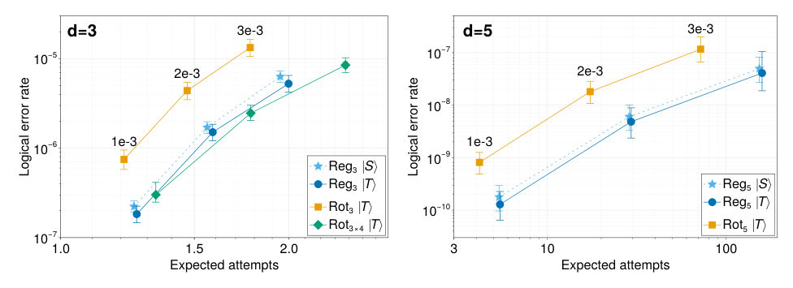
<figcaption class="paper-figure-caption"><b>Fig 1.</b> Figure 1: Performance of cultivation schemes under uniform depolarising noise for |S⟩and |T⟩, at output code distance d = 3 and 5. Reg3/5 are based on Sahay et al. [1] circuits, which make use of the regular surface code fold-transversal S gate. Rot3/5 and Rot3×4 are circuits proposed in this work, based on the partially fault-tolerant fold-transversal S gate of the rotated surface code. The |S⟩results are obtained with Stim, the |T⟩results with CAMPS simulations. These results are obtained with the addition of the final noiseless syndrome extraction in the post-selection. Except for the |S⟩results, the three points from each curve are obtained with the same samples through subset sampling...</figcaption>
</figure>
<figure class="paper-figure-card">
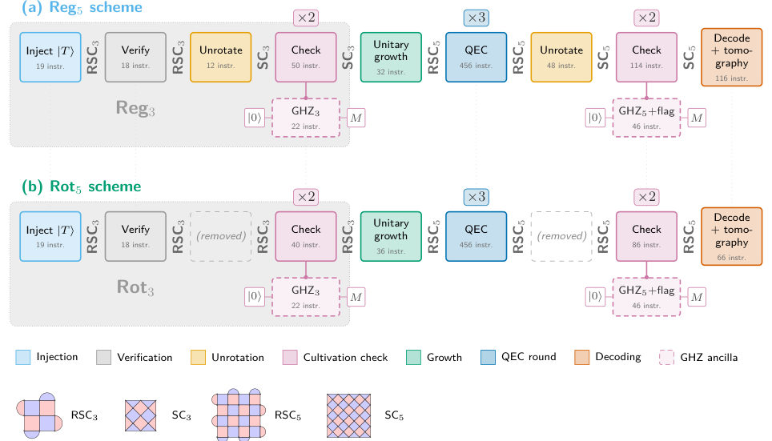
<figcaption class="paper-figure-caption"><b>Fig 2.</b> Figure 2: Gadget-level structure of the two d = 5 |T⟩cultivation Reg5 and Rot5, both built on the same d=3 rotated surface-code patch (17 physical qubits) grown to distance 5 (49 physical qubits). The label between each pair of stages gives the code carried on that step – RSC = rotated surface code, SC = unrotated surface code, subscript the code distance. A schematic representation of each code is given at the bottom of the figure. The dotted grey box, labelled Reg3/ Rot3, marks the corresponding d = 3 circuit prefix. Each cultivation check is a control-HXY gadget driven by a separate GHZ ancilla register – 3 qubits at d = 3, 5 qubits + 1 flag qubit at d = 5 – prepared and measured for each...</figcaption>
</figure>
<figure class="paper-figure-card">
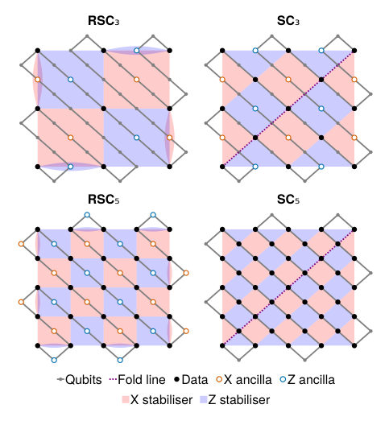
<figcaption class="paper-figure-caption"><b>Fig 3.</b> Figure 3: Qubit layout for the Reg5 cultivation MPS sim- ulation. The distance 3 rotated surface code (RSC3) is used at the injection stage, the distance 3 regular surface code (SC3) is used during the d=3 HXY operator checks, the distance 5 rotated surface code (RSC5) is used for the in- termediate syndrome extraction, and the distance 5 regular surface code (SC5) is used to do the d=5 HXY operator checks. The ancillas of the SC3 are only used to perform the rotation to the RSC5 code.</figcaption>
</figure>
<figure class="paper-figure-card">
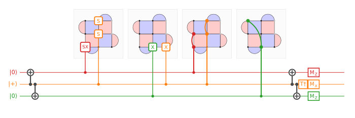
<figcaption class="paper-figure-caption"><b>Fig 4.</b> Figure 4: Logical HXY check for Rot3. The ancilla GHZ(3) state is supported on the bottom wires. The check is decomposed into controlled-S gates involving the diagonal qubits, controlled-X gates on the first row of qubits, and CCZ gates involving pairs of twisted off-diagonal qubits.</figcaption>
</figure>
<figure class="paper-figure-card">
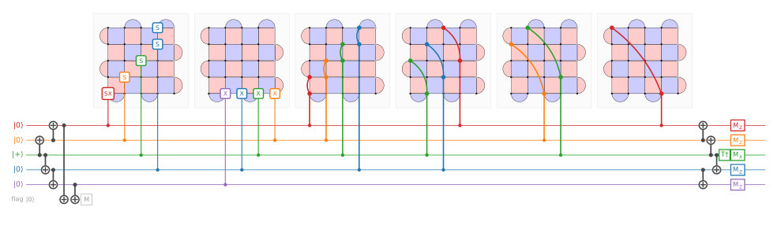
<figcaption class="paper-figure-caption"><b>Fig 5.</b> Figure 5: Logical HXY check for Rot5. The ancilla GHZ(5) state is supported on the bottom wires, with a 6th qubit serving as a flag for the state preparation. The check is decomposed into controlled-S gates involving the diagonal qubits, controlled-X gates on the first row of qubits, and CCZ gates involving pairs of twisted off-diagonal qubits.</figcaption>
</figure>
</div>

<p><strong>Summary.</strong> This work compares multiple methods for preparing essential magic states for fault-tolerant quantum computation using surface codes. By employing advanced simulation techniques like MPS, the authors demonstrate a new cultivation scheme that significantly reduces resource overhead while maintaining high fidelity. The findings provide crucial benchmarks for optimizing quantum error correction protocols against physical noise and resource constraints.</p>
<p><strong>Why it may be interesting.</strong> The rigorous comparison of simulation techniques (MPS vs. CAMPS vs. Clifft) to determine the most efficient path for resource estimation in fault-tolerant quantum computation is highly relevant for theoretical quantum information scientists.</p>
<details>
<summary>Detailed structure</summary>
<p><strong>Main problem.</strong> The paper compares various methods for cultivating high-fidelity magic states required for fault-tolerant quantum computation, specifically addressing the performance limitations of non-Clifford circuits.</p>
<p><strong>Main result.</strong> The proposed new cultivation scheme achieves a significantly lower expected space-time cost ($\sim 1.3	imes$) compared to existing protocols while maintaining a target logical error rate of $10^{-9}$.</p>
<p><strong>Method.</strong> The authors use Matrix Product States (MPS) and Clifford-augmented MPS (CAMPS) to perform exact simulations of different fold-transversal cultivation schemes on surface codes.</p>
<p><strong>Model / system.</strong> The study focuses on quantum error correction (QEC) using surface codes (regular and rotated) at distances $d=3$ and $d=5$. The process involves state preparation and subsequent cultivation stages.</p>
<p><strong>Key observables.</strong> Logical error rate, expected space-time cost, and the multiplicative factor increase in expected attempts due to physical losses.</p>
<p><strong>Important parameters / regimes.</strong> Code distance ($d=5$), target error rate ($10^{-9}$), and physical loss probabilities ($p_{	ext{loss}}$).</p>
<p><strong>Assumptions / limitations.</strong> The analysis assumes losses are modeled by independent loss channels uncorrelated with depolarizing noise, and that MPS/CAMPS can accurately capture the required entanglement structure.</p>
<p><strong>Figures summary.</strong> Figures compare the performance (error rate vs. attempts) of various schemes for $|S
angle$ and $|T
angle$ states at $d=3$ and $d=5$. Other figures detail gadget-level structures and space-time overhead breakdowns for different code types.</p>
<p><strong>Paper structure.</strong> The paper systematically compares multiple cultivation schemes ($  ext{Sahay et al.}$ vs. proposed) across different code types ($ ext{Reg}$ vs. $ ext{Rot}$) and distances ($d=3, 5$), analyzing performance metrics like error rate and space-time cost, and finally quantifying the impact of physical losses.</p>
</details>
<details>
<summary>Abstract</summary>
<p>Magic state cultivation prepares high-fidelity magic states at low expected space-time costs; however, the exact performance of some schemes is unsettled due to the difficulty in simulating non-Clifford circuits. Here, we use matrix-product states (MPS) based methods to compute the exact performance of two types of fold-transversal cultivation schemes: (i) the Sahay et al method based on the regular surface code S gate, and (ii) a method we propose based on a partially fault-tolerant fold-transversal S gate. We show that for the former protocol at $d=5$, the $|T\rangle$ output reaches similar logical error rates to the $|S\rangle$ output, traditionally used as a cheap full Clifford proxy. This contrasts with the $\sim10\times$ discrepancy reported for the $d=5$ colour-code scheme of Gidney et al. We also find that our new $d=5$ scheme has $\sim1.3\times$ lower expected space-time cost while still reaching $10^{-9}$ logical error rate. We show that MPS and Clifford-augmented MPS (CAMPS) perform on par with or even better than the recently introduced near-Clifford simulator Clifft on the hardest $d=5$ regular surface code scheme. Additionally, to speed up simulation, we propose a new pre-screening method based on simple Pauli propagation, lowering by up to three orders of magnitude the required number of exact simulations, and use several simulator-agnostic sampling methods such as subset sampling.</p>
</details>
<p><sub><a href="#top">↑ back to top</a></sub></p>

<p><a id="paper-2609.17706"></a></p>
<h3 id="diagnosing-and-restoring-the-degraded-fault-distance-of-magic-state-cultivation"><a href="http://arxiv.org/abs/2609.17706v1">Diagnosing and Restoring the Degraded Fault Distance of Magic State Cultivation</a></h3>
<p><strong>Authors:</strong> Tim Chan, Armands Strikis, Zhu Sun, Zhenyu Cai<br>
<strong>Type:</strong> theory · <strong>Category:</strong> quantum information and computing · <strong>PDF:</strong> <a href="https://arxiv.org/pdf/2609.17706v1">https://arxiv.org/pdf/2609.17706v1</a><br>
<strong>Analysis basis:</strong> full PDF text, analyzed in chunks
<strong>Topic relevance:</strong> <code>quantum measurements</code> <strong>1/5</strong></p>
<div class="figure-strip-hint">↔ Scroll figures horizontally</div>
<div class="paper-figures-scroll">
<figure class="paper-figure-card">
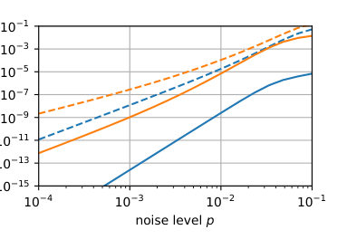
<figcaption class="paper-figure-caption"><b>Fig 1.</b> Figure 1: The logical-error behaviour of the double-check circuit used in magic state cultivation, plotted in two ways. In both subfigures: dashed (solid) lines correspond to distance-3 (-5) cultivation, and blue (orange) data correspond to cultivating S (T) states.</figcaption>
</figure>
<figure class="paper-figure-card">
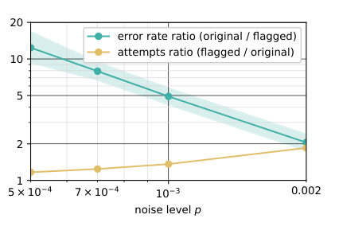
<figcaption class="paper-figure-caption"><b>Fig 2.</b> Figure 2: The pre-escape performance of distance-5 T-state cultivation, with and without Z flags, plotted in two ways.</figcaption>
</figure>
<figure class="paper-figure-card">
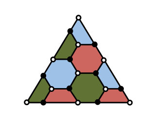
<figcaption class="paper-figure-caption"><b>Fig 3.</b> Figure 3: Distance-3 and -5 hexagonal colour codes. Each colour-shaded polygon represents an X- and a Z-type stabiliser generator, whose support is the set of qubits at its corners.</figcaption>
</figure>
<figure class="paper-figure-card">

<figcaption class="paper-figure-caption"><b>Fig 4.</b> Figure 4: A sketch of three different methods to measure H+ from Lemma 1. The top three qubits represent the n &gt; 3 data qubits of the colour code. The size of the GHZ state in each method is flexible [4, §B.3.b].</figcaption>
</figure>
<figure class="paper-figure-card">
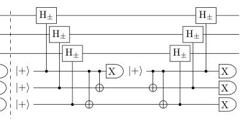
<figcaption class="paper-figure-caption"><b>Fig 5.</b> Fig. 4 for this, MSC uses the double check in Fig. 4c as it is the most amenable to 2D nearest- neighbour connectivity. Its explicit form for MSC-3, which we call the distance-3 double check, is shown in Fig. 6a; this relies on the decompositions H+ = TXT† and H−= T†XT, and has two further optimisations: T† cancels T between the two applications of controlled-H±, and the GHZ-state (un)encoding is morphed onto some data qubits for connectivity reasons. Note the circuit in the original paper [1, Figure 7] mistakenly measures H⊗7 + which is logically equivalent to H−.</figcaption>
</figure>
</div>

<p><strong>Summary.</strong> This paper diagnoses why T-state magic state cultivation protocols suffer from a degraded fault distance compared to S-state protocols due to specific Pauli hook errors. The authors develop an advanced analytical framework and propose error-detecting 'flags' that successfully restore the fault tolerance, significantly lowering the logical error rate.</p>
<p><strong>Why it may be interesting.</strong> While focused on abstract QEC, the rigorous error analysis and the development of detection flags are highly relevant to understanding noise resilience in any physical quantum system, including those studied in AMO physics.</p>
<details>
<summary>Detailed structure</summary>
<p><strong>Main problem.</strong> The paper addresses the discrepancy in fault tolerance between T-state and S-state magic state cultivation protocols, where T-state cultivation exhibits a degraded fault distance.</p>
<p><strong>Main result.</strong> By designing specific 'flags' to detect malignant Pauli hook errors, the pre-escape logical error rate for T-state cultivation can be significantly improved from $O(p^3)$ to $O(p^5)$.</p>
<p><strong>Method.</strong> The authors employ analytical derivations, deriving general formulas and an $O(n^3)$-time algorithm to calculate the acceptance probability of logical mixed states afflicted with Clifford errors.</p>
<p><strong>Model / system.</strong> The work analyzes quantum error correction circuits, specifically Magic State Cultivation (MSC) protocols using color codes (e.g., hexagonal color codes) to generate logical T and S states.</p>
<p><strong>Key observables.</strong> Logical error rate (LER), fault distance, and the probability of observing a trivial syndrome ($pr(s=0)$).</p>
<p><strong>Important parameters / regimes.</strong> Noise level ($p$), physical qubit count ($n$), and the required fault distance (e.g., distance-3 or -5).</p>
<p><strong>Assumptions / limitations.</strong> The analysis assumes circuit-level depolarizing noise and relies on approximating the sum over undetectable fault configurations by considering only low-fault-count terms.</p>
<p><strong>Figures summary.</strong> Figures illustrate the comparison of logical error probabilities for T vs. S states at different distances, and show the circuit structure for the double-check mechanism and the improved flagged circuits.</p>
<p><strong>Paper structure.</strong> The paper progresses by first identifying the T-S discrepancy, then analytically deriving the error propagation mechanisms involving Pauli hook errors and Clifford errors. It introduces an algorithm for calculating syndrome probabilities and concludes by designing and analyzing error-detecting flags to restore the fault distance.</p>
</details>
<details>
<summary>Abstract</summary>
<p>T-state cultivation is a resource-efficient protocol producing logical T states but recent benchmarks show that its logical error rate is considerably higher than intended i.e. than S-state cultivation, which is the analogous protocol for producing logical S states. In this paper, we explain this T-S discrepancy by analytically showing, under circuit-level depolarising noise, that distance-3 (-5) T-state cultivation has fault distance 2 (3) due to Pauli hook errors that propagate to coherent Clifford errors after its final double-check circuit; such errors remain Pauli in S-state cultivation, which consequently retains fault distance 3 (5). As part of our analysis we derive a general formula, and an $\mathcal O(n^3)$-time algorithm for fixed logical-qubit count, for the acceptance probability of a logical mixed state afflicted with a Clifford error, where $n$ is the physical qubit count. We then design flags that detect the malignant hook errors in cultivation, improving the pre-escape logical error rate from $\mathcal O(p^3)$ to $\mathcal O(p^5)$. At noise level $p =10^{-3}$, this is a 4.9$\times$ improvement, costing a 1.36$\times$ increase in attempts per accepted shot.</p>
</details>
<p><sub><a href="#top">↑ back to top</a></sub></p>

<p><a id="paper-2609.18761"></a></p>
<h3 id="exact-and-fast-series-expansions-for-quantum-models-with-long-range-interactions"><a href="http://arxiv.org/abs/2609.18761v1">Exact and fast series expansions for quantum models with long-range interactions</a></h3>
<p><strong>Authors:</strong> Antonia Duft, Patrick Adelhardt, Jan Alexander Koziol, Andreas A. Buchheit, Kai Phillip Schmidt<br>
<strong>Type:</strong> theory · <strong>Category:</strong> statistical mechanics · <strong>PDF:</strong> <a href="https://arxiv.org/pdf/2609.18761v1">https://arxiv.org/pdf/2609.18761v1</a><br>
<strong>Analysis basis:</strong> full PDF text, analyzed in chunks
<strong>Topic relevance:</strong> <code>analog quantum simulation</code> <strong>1/5</strong></p>
<div class="figure-strip-hint">↔ Scroll figures horizontally</div>
<div class="paper-figures-scroll">
<figure class="paper-figure-card">
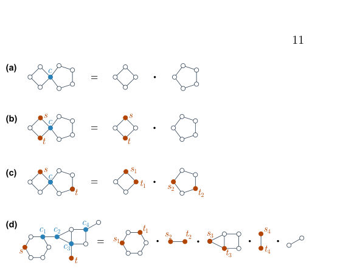
<figcaption class="paper-figure-caption"><b>Fig 1.</b> Figure 2. Block decomposition of a graph into (a)-(c) two and (d) multiple blocks. The respective graph zeta function factorizes into a product over the graph zeta functions for the individual blocks. (a) For zero momentum or equivalently equal or no terminals, the graph zeta function factorizes at the cutvertex c and both blocks contribute at zero momentum. (b) For both terminals within the same subgraph, that block contributes at the respective finite momentum while the other subgraph is treated as zero-momentum decoration. (c) For terminals in different subgraphs, the momentum is routed through the cutvertex and terminals (s1, t1) and (s2, t2) of the subgraphs are assigned accordingly....</figcaption>
</figure>
<figure class="paper-figure-card">
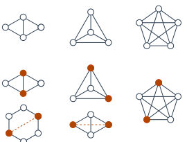
<figcaption class="paper-figure-caption"><b>Fig 2.</b> Figure 3. Block categories for evaluation. Upper row: blocks without terminals. Lower row: blocks with terminals (colored nodes). The categories from (a)–(e) are: (A) bridges, (B) zero-momentum circle graphs, (C) series-parallel (SP) blocks, including finite-momentum circle graphs, and overlap graphs with (D) tw = 3 and (E) tw = 4. For blocks with terminals, we consider the augmented block with an additional edge between terminals (orange dashed line) for the classification.</figcaption>
</figure>
<figure class="paper-figure-card">
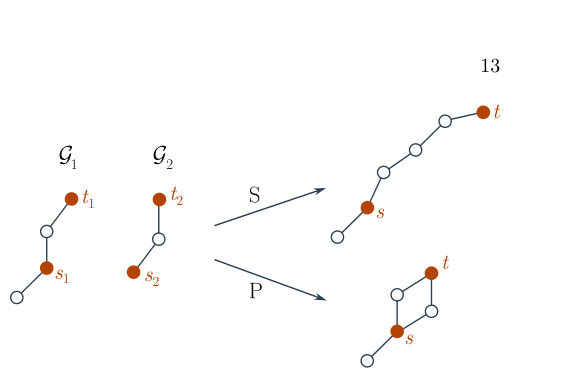
<figcaption class="paper-figure-caption"><b>Fig 3.</b> Figure 4. Serial (S) and parallel (P) composition of the two- terminal graphs G1 and G2 with terminals (s1, t1) and (s2, t2) depicted as colored nodes. Serial composition identifies the terminals t1 = s2, yielding terminals (s, t) = (s1, t2). Parallel composition identifies s = s1 = s2 and t = t1 = t2.</figcaption>
</figure>
<figure class="paper-figure-card">
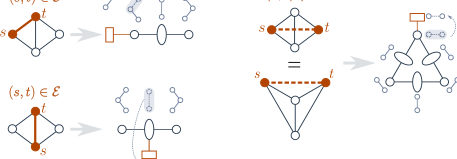
<figcaption class="paper-figure-caption"><b>Fig 4.</b> Figure 7. Dependence of the 1qp construction graph on the position of terminals s, t. (a)–(c) Three 1qp graphs with the same underlying 0qp graph corresponding to three distinct hopping processes from s to t. For each case, the original graph is shown on the left and the construction graph on the right. The gray subgraphs at the construction graph nodes depict which part of the original graph is represented by the respective node. (a) and (b) The edge (s, t) ∈E is part of the graph. First, the construction graph is determined according to the 0qp algorithm. The 1qp construction graph is given by moving the edge (s, t) in the construction graph from its original node to a new hopping-node...</figcaption>
</figure>
<figure class="paper-figure-card">
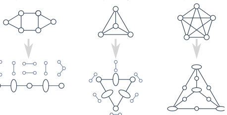
<figcaption class="paper-figure-caption"><b>Fig 5.</b> Figure 6. Representative graphs with tw ∈{2, 3, 4} from categories (C), (D) and (E), respectively, from Fig. 3 (upper row) alongside the respective construction graphs determined by applying the algorithm described in the main text (lower row). Circular nodes in the construction graph are cycle nodes that represent cycles of the original graph while oval nodes are segment nodes which represent segments of overlapping edges between cycles in the original graph. The gray subgraphs at the nodes of the construction graph depict which part of the original graph is represented by the respective node. For category (E) with tw = 4, we drop the explicit depiction of the node-subgraphs for...</figcaption>
</figure>
</div>

<p><strong>Summary.</strong> This paper introduces the graph zeta method, a deterministic computational framework designed to calculate high-order series expansions for quantum models with long-range interactions. It replaces slow Monte Carlo simulations by systematically evaluating lattice sums using graph zeta functions and tensor network techniques. This allows for fast, high-precision, and momentum-resolved modeling of complex quantum magnetic systems, with successful application to analyzing experimental data.</p>
<p><strong>Why it may be interesting.</strong> The development of a deterministic, high-precision tool for calculating lattice sums in the presence of long-range interactions is crucial for theorists studying quantum magnetism and strongly correlated systems where traditional methods fail due to computational cost or statistical noise.</p>
<details>
<summary>Detailed structure</summary>
<p><strong>Main problem.</strong> The paper addresses the need for an exact and fast computational method to calculate high-order series expansions for quantum models characterized by long-range interactions.</p>
<p><strong>Main result.</strong> The proposed graph zeta method replaces slow, noisy Monte Carlo evaluations with a deterministic, high-precision calculation, enabling fast, momentum-resolved modeling of quantum matter.</p>
<p><strong>Method.</strong> The core method is the 'graph zeta method,' which reformulates graph-embedding sums as graph zeta functions. It decomposes these sums based on treewidth, using Epstein zeta functions for low-treewidth blocks and tensor-network elimination for higher-treewidth blocks.</p>
<p><strong>Model / system.</strong> The method is benchmarked on the transverse-field Ising model (TFIM) with power-law interactions in 1D, 2D, and 3D. It is also applied to the quasi-two-dimensional triangular-lattice antiferromagnet KTmSe2.</p>
<p><strong>Key observables.</strong> High-resolution excitation spectra across the entire Brillouin zone, ground-state energy density, and series coefficients for various physical quantities.</p>
<p><strong>Important parameters / regimes.</strong> The interaction decay law (power-law), the lattice dimensionality (1D, 2D, 3D), and the perturbation parameter $\lambda$.</p>
<p><strong>Assumptions / limitations.</strong> The method assumes the applicability of linked-cluster expansions and relies on the mathematical decomposition of graph-embedding sums via treewidth.</p>
<p><strong>Figures summary.</strong> Not specified, but the notes indicate the method enables obtaining the full momentum-dependent series in a single calculation, which is key for spectral analysis.</p>
<p><strong>Paper structure.</strong> The paper introduces the graph zeta method as a deterministic alternative to MC for linked-cluster expansions. It details the mathematical framework involving graph zeta functions and treewidth decomposition, benchmarks this method on the TFIM, and concludes with an application to analyze experimental data from a specific magnetic material.</p>
</details>
<details>
<summary>Abstract</summary>
<p>Over the past decade, high-order series expansions based on linked-cluster methods have become an important tool for studying low-energy properties of gapped quantum systems with long-range interactions. We introduce a deterministic framework that removes a central computational bottleneck of this method. Our graph zeta method replaces the costly and statistically noisy Monte Carlo (MC) evaluation of high-dimensional lattice sums by a systematic, high-precision computation that delivers series coefficients within minutes on standard desktop hardware. The full momentum-dependent series is obtained in a single calculation, enabling high-resolution excitation spectra throughout the Brillouin zone. Building on the companion paper [1], the method reformulates graph-embedding sums as graph zeta functions and decomposes them into blocks classified by their treewidth tw. Low-treewidth blocks (tw$\leq2$) admit closed expressions based on Epstein zeta functions, while higher-treewidth blocks (tw$>2$) are evaluated using tensor-network bucket elimination. We benchmark the approach for transverse-field Ising models with power-law interactions in 1d, 2d, and 3d, reproducing previous MC results at a fraction of the computational cost while enabling substantially denser parameter sampling. An open-source implementation makes the method directly applicable to general interactions and large parameter scans. As an application, we compare microscopic interaction models for the stacked quasi-2d transverse-field Ising triangular-lattice antiferromagnet KTmSe$_2$ and find that a model including dipolar interactions best describes existing experimental data. The graph zeta method thus turns high-order linked-cluster expansions into a practical and deterministic tool for fast quantitative momentum-resolved modeling of short- and long-range quantum matter.</p>
</details>
<p><sub><a href="#top">↑ back to top</a></sub></p>

<p><a id="paper-2609.18803"></a></p>
<h3 id="feasibility-ordering-of-entanglement-source-placement-for-qubit-channels"><a href="http://arxiv.org/abs/2609.18803v1">Feasibility Ordering of Entanglement-Source Placement for Qubit Channels</a></h3>
<p><strong>Authors:</strong> Samuel Marquez Gonzalez<br>
<strong>Type:</strong> theory · <strong>Category:</strong> quantum information and computing · <strong>PDF:</strong> <a href="https://arxiv.org/pdf/2609.18803v1">https://arxiv.org/pdf/2609.18803v1</a><br>
<strong>Analysis basis:</strong> full PDF text, analyzed in chunks
<strong>Topic relevance:</strong> <code>correlated / nonlocal dissipation</code> <strong>1/5</strong></p>
<div class="figure-strip-hint">↔ Scroll figures horizontally</div>
<div class="paper-figures-scroll">
<figure class="paper-figure-card">
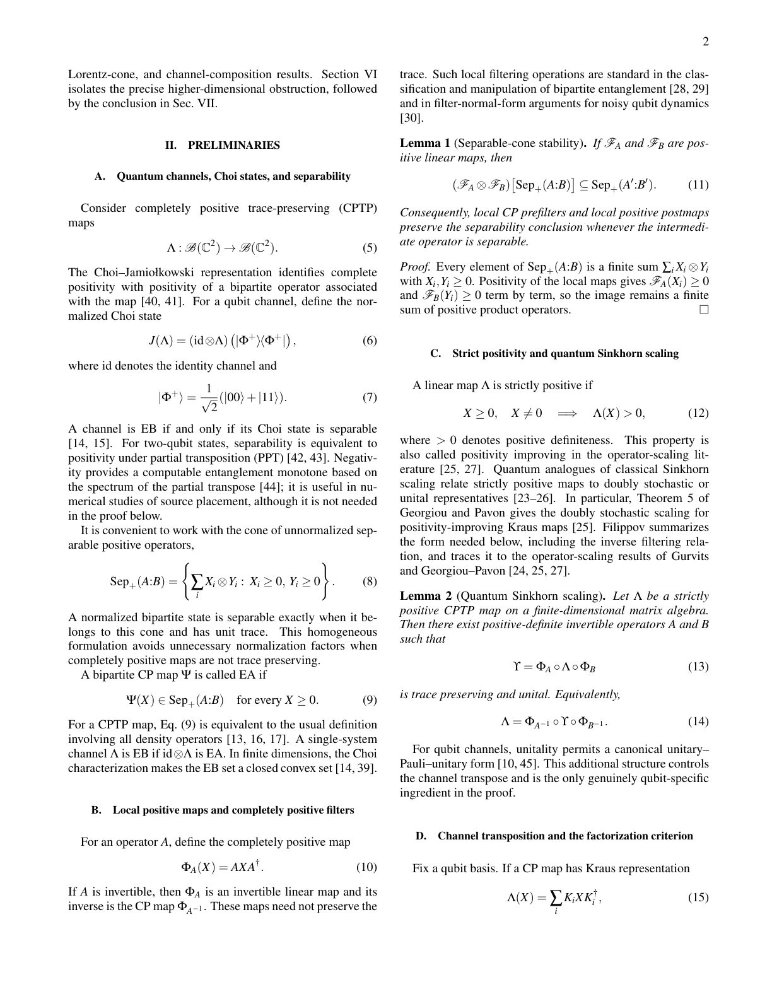
<figcaption class="paper-figure-caption"><b>Fig 1.</b> Low-resolution page preview, page 2</figcaption>
</figure>
<figure class="paper-figure-card">
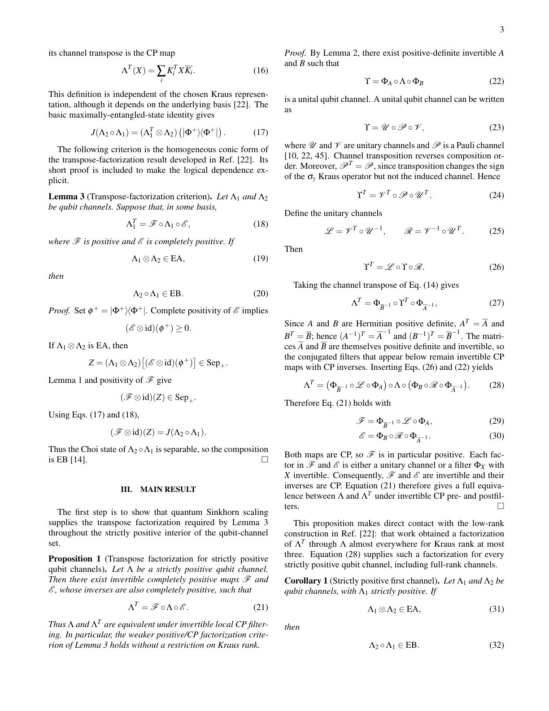
<figcaption class="paper-figure-caption"><b>Fig 2.</b> Low-resolution page preview, page 3</figcaption>
</figure>
<figure class="paper-figure-card">
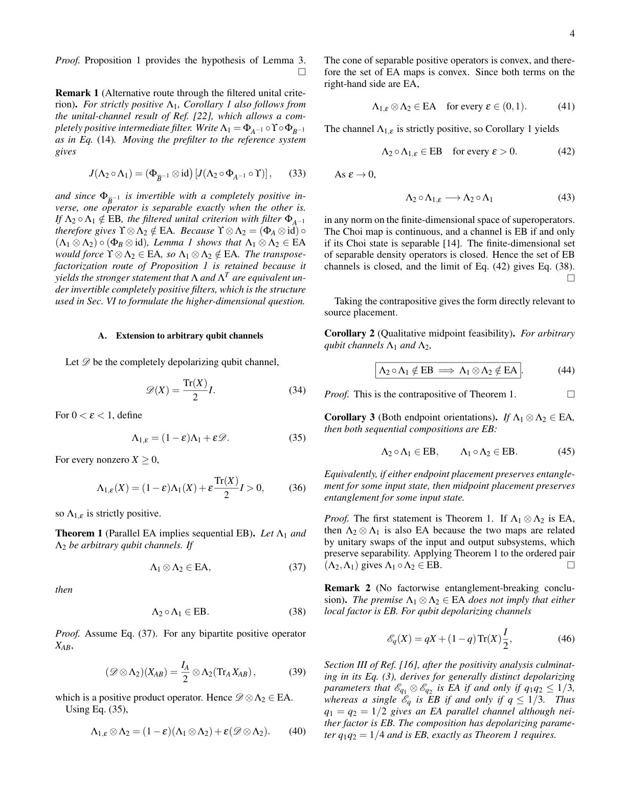
<figcaption class="paper-figure-caption"><b>Fig 3.</b> Low-resolution page preview, page 4</figcaption>
</figure>
<figure class="paper-figure-card">
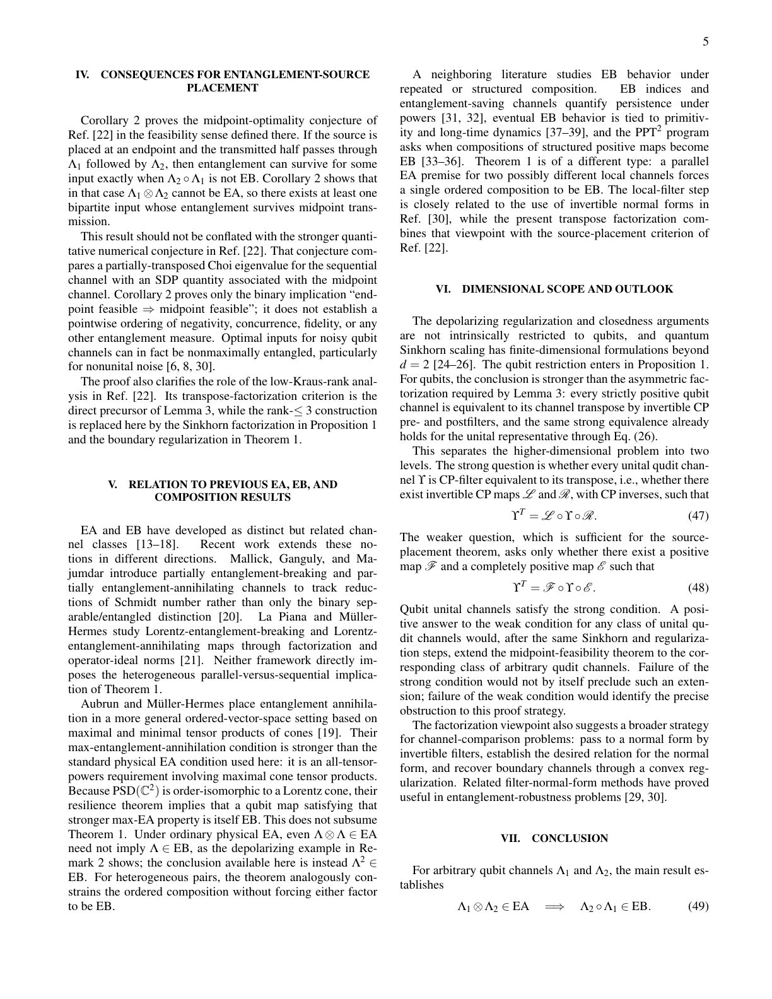
<figcaption class="paper-figure-caption"><b>Fig 4.</b> Low-resolution page preview, page 5</figcaption>
</figure>
<figure class="paper-figure-card">
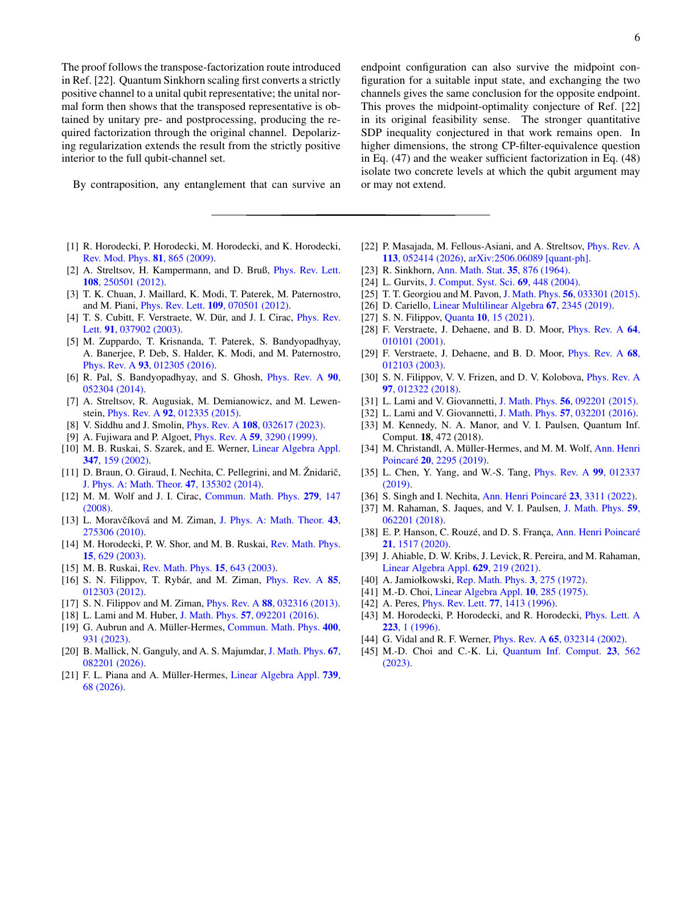
<figcaption class="paper-figure-caption"><b>Fig 5.</b> Low-resolution page preview, page 6</figcaption>
</figure>
</div>

<p><strong>Summary.</strong> This paper proves a fundamental relationship between the entanglement properties of parallel versus sequential compositions of noisy qubit channels. Specifically, it shows that if the parallel combination is entanglement-assisted, the sequential composition must be entanglement-breaking. This establishes the optimality of midpoint placement for entanglement sources in the feasibility sense.</p>
<p><strong>Why it may be interesting.</strong> This work provides rigorous mathematical tools (like factorization criteria and regularization) to compare different physical arrangements of quantum resources (entanglement sources) in open quantum systems.</p>
<details>
<summary>Detailed structure</summary>
<p><strong>Main problem.</strong> The paper investigates the feasibility ordering of placing an entanglement source when considering two noisy qubit channels ($\Lambda_1 \otimes \Lambda_2$ vs. $\Lambda_2 \circ \Lambda_1$).</p>
<p><strong>Main result.</strong> It proves that if the parallel composition of two qubit channels is entanglement-assisted (EA), then the corresponding sequential composition must be entanglement-breaking (EB), establishing midpoint optimality in the feasibility sense.</p>
<p><strong>Method.</strong> The proof utilizes the transpose-factorization criterion, extending results from strictly positive channels to arbitrary channels via depolarizing regularization and quantum Sinkhorn scaling.</p>
<p><strong>Model / system.</strong> The system involves two noisy qubit channels ($\Lambda_1, \Lambda_2$) acting on qubits, analyzed through concepts like entanglement breaking (EB) and entanglement assisting (EA).</p>
<p><strong>Key observables.</strong> Entanglement-Breaking (EB) and Entanglement-Assisted (EA) properties of channel compositions ($\Lambda_1 \otimes \Lambda_2$ and $\Lambda_2 \circ \Lambda_1$).</p>
<p><strong>Important parameters / regimes.</strong> The channels $\Lambda_1$ and $\Lambda_2$, and the concept of strict positivity for initial factorization steps.</p>
<p><strong>Assumptions / limitations.</strong> The extension of the factorization criterion from strictly positive channels to arbitrary channels relies on depolarizing regularization.</p>
<p><strong>Paper structure.</strong> The paper develops the argument by first establishing the necessary transpose factorization for strictly positive channels using Quantum Sinkhorn scaling, and then extending this result to arbitrary channels using regularization techniques to prove the main implication.</p>
</details>
<details>
<summary>Abstract</summary>
<p>This work studies the placement of an entanglement source along a communication line formed by two noisy qubit channels. Recent work argued, on analytical and numerical grounds, that midpoint placement should be at least as favorable as endpoint placement. Here it is shown that, for arbitrary qubit channels, if a sequential composition can preserve entanglement, then the corresponding parallel action cannot annihilate all entanglement. The proof uses the transpose-factorization criterion introduced in that recent work. Quantum Sinkhorn scaling converts every strictly positive qubit channel into a unital representative, and the special normal form of unital qubit channels then yields the required factorization of the transposed map through the original channel. Depolarizing regularization and the closedness of the set of entanglement-breaking channels extend the result to arbitrary channels. Consequently, $Λ_1 \otimes Λ_2 \in \mathrm{EA}$ implies $Λ_2 \circ Λ_1 \in \mathrm{EB}$, and, by exchanging the two channels, the same holds for the opposite composition order. This proves the recent conjecture that midpoint placement is optimal for all qubit channels, in the feasibility sense in which that optimality was originally defined.</p>
</details>
<p><sub><a href="#top">↑ back to top</a></sub></p>

<p><a id="paper-2609.18614"></a></p>
<h3 id="orbital-induced-peierls-transitions-how-orbitals-orchestrate-lattice-instability"><a href="http://arxiv.org/abs/2609.18614v1">Orbital-Induced Peierls Transitions: How Orbitals Orchestrate Lattice Instability</a></h3>
<p><strong>Authors:</strong> T. Mizokawa, S. V. Streltsov<br>
<strong>Type:</strong> theory · <strong>Category:</strong> strongly correlated electrons · <strong>PDF:</strong> <a href="https://arxiv.org/pdf/2609.18614v1">https://arxiv.org/pdf/2609.18614v1</a><br>
<strong>Analysis basis:</strong> full PDF text, analyzed in chunks
<strong>Topic relevance:</strong> <code>Keldysh / 2PI / non-Gaussian methods</code> <strong>1/5</strong></p>
<div class="figure-strip-hint">↔ Scroll figures horizontally</div>
<div class="paper-figures-scroll">
<figure class="paper-figure-card">
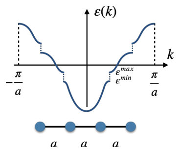
<figcaption class="paper-figure-caption"><b>Fig 1.</b> FIG. 1: Peierls was the first to show that the electron disper- sion of a linear chain of atoms spaced at distance a is modified by lattice distortions. The vertical breaks in the sketch are proportional to corresponding displacements. If the electron filling is such that the Fermi energy lies exactly within the gap, the distortion lowers the electronic energy. Otherwise, the distortion is ineffective: the average of the maximal εmax</figcaption>
</figure>
<figure class="paper-figure-card">
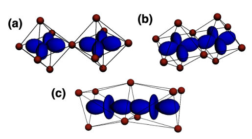
<figcaption class="paper-figure-caption"><b>Fig 2.</b> FIG. 3: Different type of sharing in octahedral geometry: (a) common corner with the x2−y2 orbital, (b) common edge with the xy orbital, and (c) common face with the a1g orbital.</figcaption>
</figure>
<figure class="paper-figure-card">
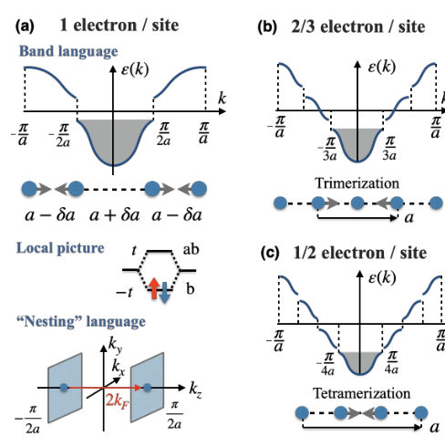
<figcaption class="paper-figure-caption"><b>Fig 3.</b> FIG. 2: Illustration of the Peierls transition for different num- bers of electrons (a-c). For the case of a single electron, dif- ferent interpretations of the transition are presented: the in- stability leading to gap opening in the electronic spectrum is illustrated in the top panel of (a). The formation of bond- ing and antibonding states assuming orthogonal wavefunction due to dimerization and corresponding energy gain is shown in the middle panel of (a). The bottom panel of (a) illustrates nesting of the Fermi surface, which leads to divergence of the generalized susceptibility in Lindhard theory or in the ran- dom phase approximation (RPA), see Eq. (1).</figcaption>
</figure>
<figure class="paper-figure-card">
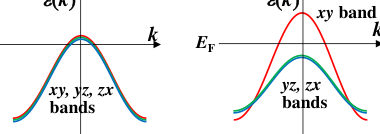
<figcaption class="paper-figure-caption"><b>Fig 4.</b> FIG. 4: Schematic drawings for t2g band dispersions of AB2X4 spinels (transition metals at B sites) in the cubic (a = b = c) situation (a) and the elongated tetragonal (a = b &lt; c) situation (b). Setting the x-, y-, and z-axes along the a, b, and c directions of the cubic/tetragonal crys- tal, the xy, yz, and zx bands run along the [1,±1,0], [0,1,±1], and [±1,0,1] directions, respectively. When the Fermi level is close to the upper bound of the t2g bands, holes can be ac- commodated only in the xy band due to the band Jahn-Teller distortion with a = b &lt; c along the c- or z-axis.</figcaption>
</figure>
<figure class="paper-figure-card">
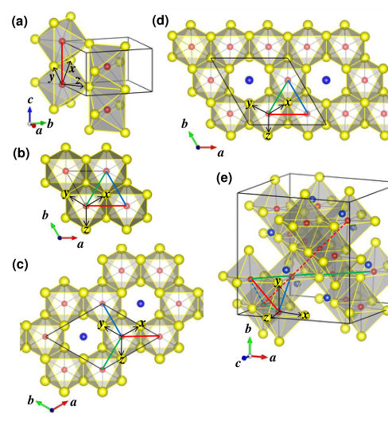
<figcaption class="paper-figure-caption"><b>Fig 5.</b> FIG. 5: Examples of various structures with orbital-induced Peierls transition: (a) rutile-type structure containing chains of edge-sharing MX6 octahedra, (b) CdI2-type (α-NaFeO2 has very similar motif) structure having triangular lattice of transition-metal sites, (c) ilmenite-type structure (transition- metal sites form honeycomb network), (d) nolanite-type struc- ture (transition-metal sites form kagome network), and (e) spinel-type structure (transition-metal sites form pyrochlore network consisting of metal tetrahedra). The MX6 octahe- dra are shaded. The transition-metal M and ligand X are indicated by red and yellow balls. In (c) and (d), alkaline or alkaline-earth cations partly...</figcaption>
</figure>
</div>

<p><strong>Summary.</strong> This review explores how orbital degrees of freedom can drive lattice instabilities, such as the Peierls transition, even in higher-dimensional materials. It details two key mechanisms: orbital anisotropy leading to effective 1D behavior, and the Jahn-Teller effect lifting band degeneracies. The work is crucial for understanding structural transitions in transition metal oxides based on orbital interactions.</p>
<p><strong>Why it may be interesting.</strong> The coupling between orbital physics, lattice instability (Peierls), and electronic correlations is a cornerstone of strongly correlated electron physics, relevant to understanding Mott insulators and metal-insulator transitions.</p>
<details>
<summary>Detailed structure</summary>
<p><strong>Main problem.</strong> The paper investigates how orbital degrees of freedom can induce the Peierls transition (lattice instability) in higher dimensions, moving beyond the traditional one-dimensional context.</p>
<p><strong>Main result.</strong> Orbital anisotropy allows the Peierls instability to manifest in higher dimensions, often synergistically coupled with the Jahn-Teller effect in edge-sharing transition metal oxide structures.</p>
<p><strong>Method.</strong> The analysis uses theoretical concepts like the generalized susceptibility ($\chi_0(\vec{q})$) and compares energy gains from electronic structure changes (e.g., molecular orbital formation) against elastic energy loss.</p>
<p><strong>Model / system.</strong> The focus is on transition metal compounds, particularly those with partially filled $t_{2g}$ orbitals, often exhibiting edge-sharing octahedral geometries (e.g., in spinels).</p>
<p><strong>Key observables.</strong> Gap opening at specific wavevectors, divergence of the generalized susceptibility, and band structure evolution under Jahn-Teller distortions.</p>
<p><strong>Important parameters / regimes.</strong> Orbital filling ($d^n$), lattice geometry (edge-sharing vs. face-sharing), and the strength of orbital anisotropy.</p>
<p><strong>Assumptions / limitations.</strong> The review primarily focuses on $d$ orbitals and notes the difficulty in cleanly separating the energy contributions from the band Jahn-Teller effect versus the Peierls mechanism.</p>
<p><strong>Figures summary.</strong> Figures illustrate the Peierls transition in 1D chains, compare orbital sharing in different octahedral geometries, and show $t_{2g}$ band dispersions under structural distortions in spinel structures.</p>
<p><strong>Paper structure.</strong> The review progresses from the traditional 1D Peierls concept to mechanisms allowing instability in higher dimensions, detailing the role of orbital anisotropy and Jahn-Teller coupling in specific crystal structures.</p>
</details>
<details>
<summary>Abstract</summary>
<p>The Peierls transition is typically regarded as a phenomenon inherent to one-dimensional (1D) materials. However, orbital degrees of freedom can induce this instability even in higher dimensions. Two mechanisms are primarily responsible. First, the anisotropic shape of $p$ and $d$ orbitals can lead to effective "1D-zation" of the electronic spectrum. Second, orbital degrees of freedom can lift band degeneracy by shifting bands relative to each other via the local or band Jahn-Teller effect, thereby affecting the nesting of the Fermi surface. The orbital-induced Peierls effect is most commonly observed when ligand octahedra surrounding transition metals share edges, and less frequently in face-sharing geometries. In this review, we discuss the underlying physical mechanisms, the materials in which this phenomenon occurs, the characteristics of the high-temperature undistorted phase, and the role of local effects such as the formation of molecular orbitals.</p>
</details>
<p><sub><a href="#top">↑ back to top</a></sub></p>

<p><a id="paper-2609.18018"></a></p>
<h3 id="perfect-state-transfer-under-matrix-powers-parity-and-spectral-arithmetic"><a href="http://arxiv.org/abs/2609.18018v1">Perfect state transfer under matrix powers: parity and spectral arithmetic</a></h3>
<p><strong>Authors:</strong> Xingkun Song<br>
<strong>Type:</strong> theory · <strong>Category:</strong> other · <strong>PDF:</strong> <a href="https://arxiv.org/pdf/2609.18018v1">https://arxiv.org/pdf/2609.18018v1</a><br>
<strong>Analysis basis:</strong> full PDF text, analyzed in chunks
<strong>Topic relevance:</strong> <code>analog quantum simulation</code> <strong>1/5</strong></p>
<div class="figure-strip-hint">↔ Scroll figures horizontally</div>
<div class="paper-figures-scroll">
<figure class="paper-figure-card">
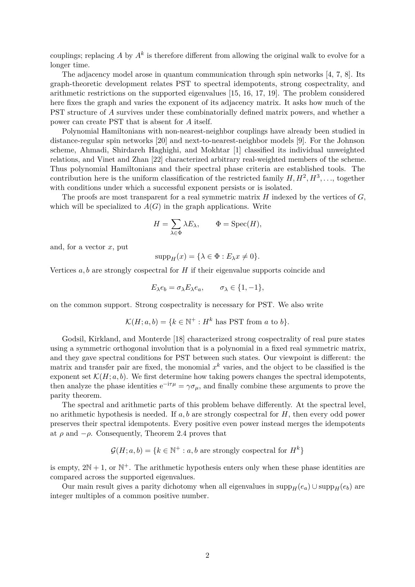
<figcaption class="paper-figure-caption"><b>Fig 1.</b> Low-resolution page preview, page 2</figcaption>
</figure>
<figure class="paper-figure-card">
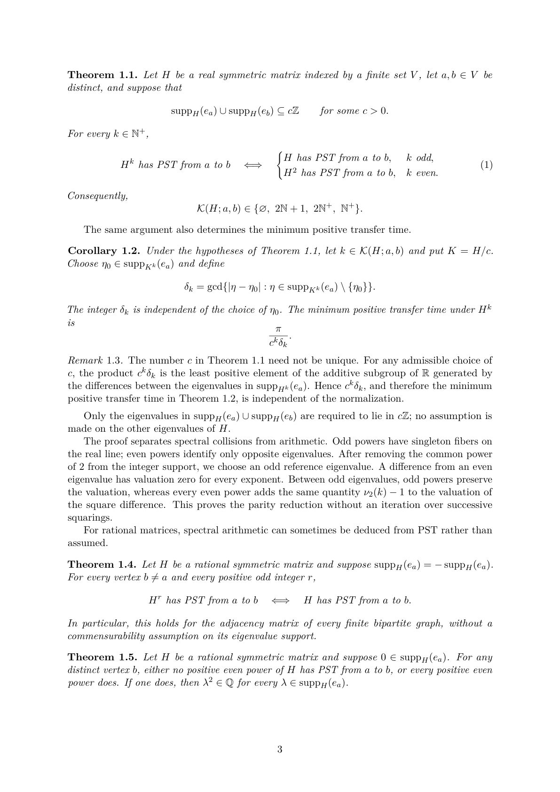
<figcaption class="paper-figure-caption"><b>Fig 2.</b> Low-resolution page preview, page 3</figcaption>
</figure>
<figure class="paper-figure-card">
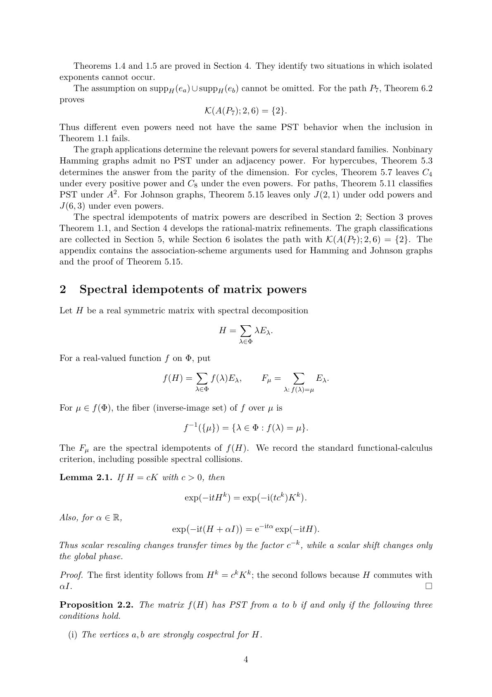
<figcaption class="paper-figure-caption"><b>Fig 3.</b> Low-resolution page preview, page 4</figcaption>
</figure>
<figure class="paper-figure-card">
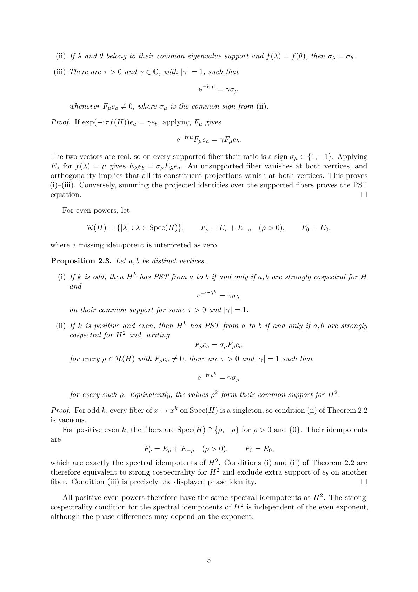
<figcaption class="paper-figure-caption"><b>Fig 4.</b> Low-resolution page preview, page 5</figcaption>
</figure>
<figure class="paper-figure-card">
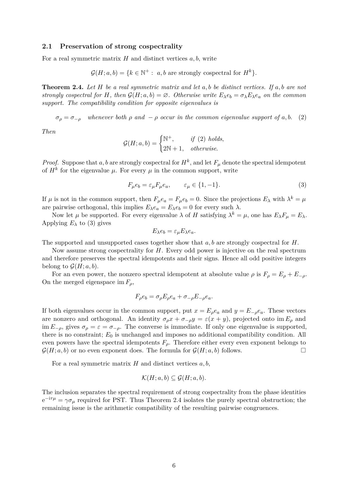
<figcaption class="paper-figure-caption"><b>Fig 5.</b> Low-resolution page preview, page 6</figcaption>
</figure>
</div>

<p><strong>Summary.</strong> This paper provides a rigorous mathematical classification of when Perfect State Transfer (PST) occurs for powers of a matrix $H$, often the adjacency matrix of a graph. It establishes that PST existence frequently follows a parity rule based on the spectral properties of $H$. The methodology combines spectral theory with number theory to precisely determine the allowed exponents $k$ for quantum state transfer.</p>
<p><strong>Why it may be interesting.</strong> This work provides deep mathematical tools for analyzing quantum walks and quantum information transfer on graphs, which is highly relevant to quantum network theory and quantum computation models.</p>
<details>
<summary>Detailed structure</summary>
<p><strong>Main problem.</strong> The paper classifies the exponents $k$ for which a real symmetric matrix $H$ (often an adjacency matrix) has Perfect State Transfer (PST) between two distinct vertices $a$ and $b$ when considering the matrix power $H^k$. It analyzes the interplay between spectral properties and arithmetic phase conditions governing this transfer.</p>
<p><strong>Main result.</strong> The existence of PST often follows a parity rule: if the spectral supports are commensurable, PST occurs if $k$ is odd (related to $H$) or if $k$ is even (related to $H^2$). Specific graph families like hypercubes and paths are classified, showing PST is highly constrained.</p>
<p><strong>Method.</strong> The analysis relies heavily on spectral theory, using spectral decomposition, spectral idempotents, and number-theoretic tools like the greatest common divisor (gcd) and 2-adic valuations ($
u_2$) to analyze phase compatibility conditions.</p>
<p><strong>Model / system.</strong> The system is modeled by a real symmetric matrix $H$, typically the adjacency matrix $A(G)$ of a graph $G$. The dynamics are governed by the evolution operator $\exp(-itH^k)$, where $H^k$ is the $k$-th power of the matrix.</p>
<p><strong>Key observables.</strong> Perfect State Transfer (PST) existence, minimum transfer time (related to $    ext{gcd}$ of spectral differences), and the parity of the exponent $k$.</p>
<p><strong>Important parameters / regimes.</strong> The structure of the graph $G$ (e.g., path $P_7$, hypercubes), the vertex pair $(a, b)$, and the spectral properties of $H$.</p>
<p><strong>Assumptions / limitations.</strong> The analysis often assumes that the supported eigenvalues are integer multiples of a common positive number ($c\mathbb{Z}$) or that the matrix is rational symmetric.</p>
<p><strong>Figures summary.</strong> Not specified.</p>
<p><strong>Paper structure.</strong> The paper develops from general functional calculus criteria to specific theorems establishing parity dichotomies (Theorem 1.1) for PST exponents, followed by specialized analyses for rational matrices and detailed classifications for specific graph families like paths and Johnson graphs.</p>
</details>
<details>
<summary>Abstract</summary>
<p>For a real symmetric matrix $H$ and distinct vertices $a,b$, we classify exponents $k$ for which $H^k$ has perfect state transfer (PST) from $a$ to $b$. If their supported eigenvalues are integer multiples of a common positive number, every odd exponent reduces to $H$ and every positive even exponent reduces to $H^2$. We determine the minimum transfer times using a greatest common divisor of supported spectral differences. For rational symmetric matrices, symmetry of the source vertex support about zero implies the odd-power equivalence without a commensurability assumption; this includes all bipartite graphs. If the source vertex supports zero, PST under one positive even power implies PST under every positive even power. For a symmetric three-point quadratic spectrum whose outer projection signs agree and differ from the central sign, a nonzero rational shift leaves exactly one PST exponent. We classify all adjacency powers of hypercubes, cycles, and Johnson graphs, and all adjacency squares of paths. In particular, the adjacency matrix of $P_7$ has PST from vertex $2$ to vertex $6$ only at exponent $2$.</p>
</details>
<p><sub><a href="#top">↑ back to top</a></sub></p>

<p><a id="paper-2609.17789"></a></p>
<h3 id="qit-quantum-inspired-transformer-for-visual-recognition-task"><a href="http://arxiv.org/abs/2609.17789v1">QiT: Quantum-Inspired Transformer for Visual Recognition Task</a></h3>
<p><strong>Authors:</strong> Badri N. Patro, Vijay Agneeswaran<br>
<strong>Type:</strong> experiment · <strong>Category:</strong> other · <strong>PDF:</strong> <a href="https://arxiv.org/pdf/2609.17789v1">https://arxiv.org/pdf/2609.17789v1</a><br>
<strong>Analysis basis:</strong> full PDF text, analyzed in chunks
<strong>Topic relevance:</strong> <code>analog quantum simulation</code> <strong>1/5</strong></p>
<div class="figure-strip-hint">↔ Scroll figures horizontally</div>
<div class="paper-figures-scroll">
<figure class="paper-figure-card">
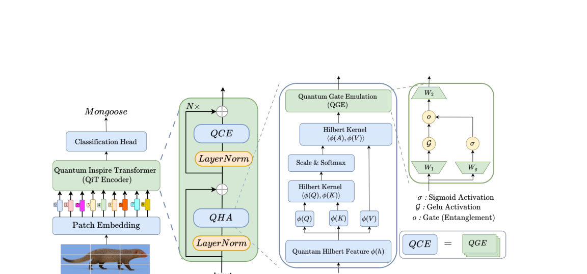
<figcaption class="paper-figure-caption"><b>Fig 1.</b> Figure 1. QiT encoder block: Tokens are mapped to a quantum-inspired Hilbert space via angle encoding and Fourier features. Kernel attention approximates quantum fidelity, while local quantum mixers and a circuit surrogate layer emulate bounded-depth PQCs within a Transformer architecture.</figcaption>
</figure>
<figure class="paper-figure-card">
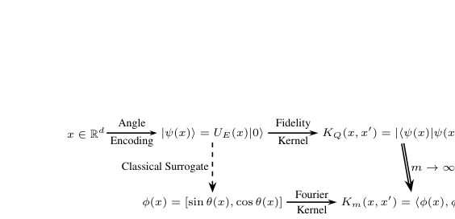
<figcaption class="paper-figure-caption"><b>Fig 2.</b> Figure 2. Two distinct routes from angle-encoded inputs. QiT uses the explicit cosine feature kernel at the bottom; it does not generally approximate the circuit-dependent fidelity kernel at the top.</figcaption>
</figure>
<figure class="paper-figure-card">
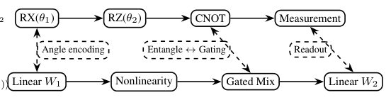
<figcaption class="paper-figure-caption"><b>Fig 3.</b> Figure 3. Design analogy between a parameterized circuit and the QiT channel mixer. The correspondence motivates the sequence of operations but does not imply equivalent states or functions.</figcaption>
</figure>
</div>

<p><strong>Summary.</strong> This paper introduces QiT, a Quantum-inspired Transformer that adapts concepts like angle encoding and periodic feature mapping from quantum mechanics into a purely classical, scalable vision model. By doing so, it tests whether quantum-motivated structural biases can improve classical performance without requiring actual quantum hardware. The results show QiT is a competitive and efficient baseline for exploring quantum-inspired inductive biases in computer vision.</p>
<p><strong>Why it may be interesting.</strong> While the primary focus is on classical ML, the explicit use of periodic functions and kernel approximations derived from quantum state representations provides a novel, testable inductive bias for deep learning models.</p>
<details>
<summary>Detailed structure</summary>
<p><strong>Main problem.</strong> The paper addresses the challenge of incorporating structural insights from quantum models into scalable classical neural network architectures for visual recognition.</p>
<p><strong>Main result.</strong> The proposed model, QiT, achieves competitive performance on ImageNet-1K (78.3% top-1 accuracy) while remaining computationally efficient and avoiding the runtime costs of simulated quantum circuits.</p>
<p><strong>Method.</strong> QiT integrates three quantum-inspired components into a classical Transformer: angle-inspired encoding, self-attention over periodic features, and a gated multiplicative emulation layer.</p>
<p><strong>Model / system.</strong> QiT is a classical Transformer architecture designed to mimic quantum principles. It uses angle encoding to map image tokens to trigonometric features analogous to quantum rotations, and employs a gated mixer inspired by variational quantum circuits.</p>
<p><strong>Key observables.</strong> ImageNet-1K top-1 accuracy (78.3%), computational cost (11.5 GFLOPs), and parameter count (45.7M).</p>
<p><strong>Important parameters / regimes.</strong> The model operates entirely using differentiable tensor operations, maintaining the standard $\mathcal{O}(N^2D)$ attention complexity.</p>
<p><strong>Assumptions / limitations.</strong> The model explicitly claims neither quantum computation nor quantum speedup; its performance is evaluated as a classical architecture.</p>
<p><strong>Figures summary.</strong> Figure 1 illustrates the encoder block using angle encoding and Fourier features; Figure 2 contrasts the explicit cosine feature kernel used by QiT with the circuit-dependent fidelity kernel.</p>
<p><strong>Paper structure.</strong> The paper introduces the problem, details the three classical components (encoding, attention, mixing) motivated by quantum concepts, and validates the architecture's feasibility and performance on standard image classification benchmarks.</p>
</details>
<details>
<summary>Abstract</summary>
<p>Quantum machine learning offers a compelling representational perspective: angle-encoded states inhabit Hilbert spaces in which periodic similarities and interactions can be expressed naturally. Realizing this perspective for visual recognition remains difficult, however, because present quantum neural networks are constrained by limited qubit counts, costly circuit simulation and measurement, noise, and unstable optimization on noisy intermediate-scale quantum devices. We investigate whether useful structural ideas from quantum models can instead be realized as scalable classical Transformer operations. We introduce QiT, a Quantum-inspired Transformer for vision tasks with three components: (i) angle-inspired encoding that maps image tokens to learned trigonometric Hilbert-space features analogous to quantum rotation-based state encoding; (ii) self-attention over these periodic features, inducing a classical cosine kernel approximated to quantum fidelity kernels; and (iii) gated multiplicative emulation, a trainable classical surrogate for interaction terms found in variational circuits. All components are differentiable tensor operations, so QiT claims neither quantum computation nor quantum speedup and retains the $\mathcal{O}(N^2D)$ attention complexity of a standard Vision Transformer. Across image-classification benchmarks, QiT is competitive with a matched classical Transformer while avoiding the severe runtime cost observed for a small simulated quantum Transformer. QiT-B reaches 78.3\% ImageNet-1K top-1 accuracy with 45.7M parameters and 11.5 GFLOPs. These results position QiT as a scalable baseline for isolating and evaluating quantum-motivated inductive biases in visual recognition.</p>
</details>
<p><sub><a href="#top">↑ back to top</a></sub></p>

<p><a id="paper-2609.18209"></a></p>
<h3 id="the-expressive-power-of-constrained-qaoa-what-you-might-have-missed"><a href="http://arxiv.org/abs/2609.18209v1">The Expressive Power of Constrained QAOA: What You Might Have MISsed</a></h3>
<p><strong>Authors:</strong> Boris Tsvelikhovskiy, Bao Bach, Ilya Safro<br>
<strong>Type:</strong> theory · <strong>Category:</strong> quantum information and computing · <strong>PDF:</strong> <a href="https://arxiv.org/pdf/2609.18209v1">https://arxiv.org/pdf/2609.18209v1</a><br>
<strong>Analysis basis:</strong> full PDF text, analyzed in chunks
<strong>Topic relevance:</strong> <code>quantum measurements</code> <strong>1/5</strong></p>
<div class="figure-strip-hint">↔ Scroll figures horizontally</div>
<div class="paper-figures-scroll">
<figure class="paper-figure-card">
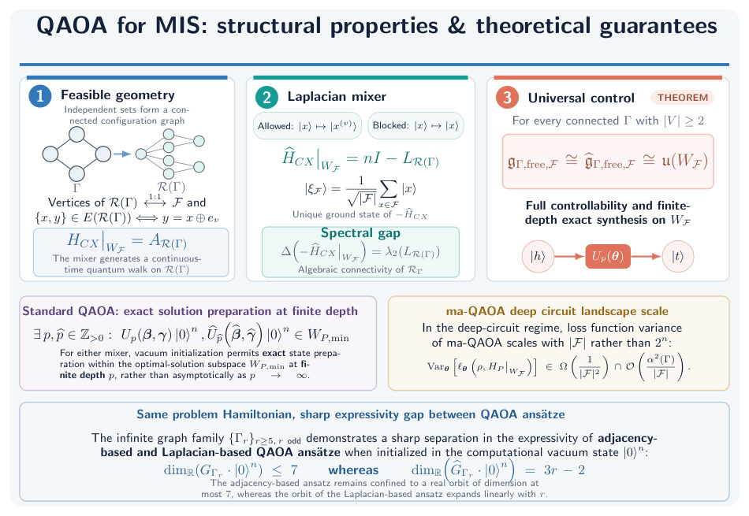
<figcaption class="paper-figure-caption"><b>Fig 1.</b> FIG. 1. Overview of main results for constrained MIS-QAOA. (1) Restricted to the feasible subspace WF, the standard Flip-or-Void mixer HCX WF equals the adjacency matrix AR of the independent set reconfiguration graph R(Γ), thereby inducing a continuous-time quantum walk on R(Γ) initialized at the vertex corresponding to the initial computational state [10, Section VII]. (2) The proposed Flip-or-Stay mixer b HCX restricts to the shifted negative graph Laplacian nI −LR, whose spectral gap ∆  −b HCX WF  = λ2(LR) equals the algebraic connectiv- ity of R(Γ), with unique ground state given by the uniform feasible superposition |ξF⟩. (3) For any connected graph Γ with |V | ≥2, free multi-angle...</figcaption>
</figure>
<figure class="paper-figure-card">
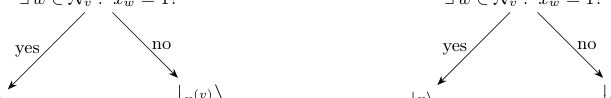
<figcaption class="paper-figure-caption"><b>Fig 2.</b> FIG. 2. Comparison of the local mixer terms acting on a computational basis state |x⟩. The local Flip-or-Void mixer HCX,v annihilates configurations in which at least one neighbor of v is occupied, whereas the Flip-or-Stay mixer b HCX,v leaves such configurations unchanged. When all neighbors of v are unoccupied, both mixers flip the v-th bit.</figcaption>
</figure>
<figure class="paper-figure-card">
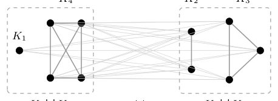
<figcaption class="paper-figure-caption"><b>Fig 3.</b> FIG. 3. The graph Γ5 = K1,4 F K2,3 = (K1 F K4) ∨(K2 F K3). The dashed boxes indicate the two join factors. The subgraphs K3 and K4 are drawn as a triangle and a complete graph on four vertices, respectively. Every vertex in one dashed box is adjacent to every vertex in the other.</figcaption>
</figure>
<figure class="paper-figure-card">
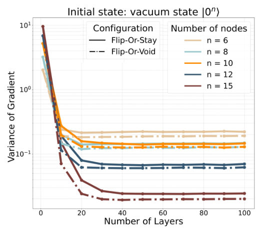
<figcaption class="paper-figure-caption"><b>Fig 4.</b> FIG. 4. Variance of the loss function gradient for the Maximum Independent Set problem across graph sizes n ∈ {6, 8, 10, 12, 15} and varying circuit depths 1 ≤p ≤100. Panels compare the standard Flip-or-Void mixer HCX QAOA against the proposed Flip-or-Stay mixer b HCX variant. Data points represent the mean gradient variance evaluated over 20 non-isomorphic, random Erd¨os-R¨enyi graphs with edge probability of 1.5 log(n)/n per system size n, with 100 random parameter initializations θ ∼U([0, 2π]2p) per instance.</figcaption>
</figure>
<figure class="paper-figure-card">
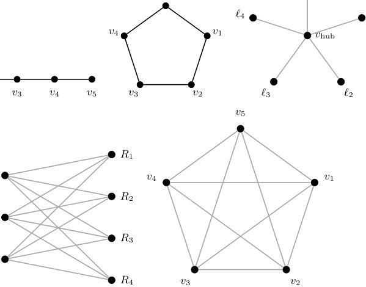
<figcaption class="paper-figure-caption"><b>Fig 5.</b> FIG. 5. Benchmark graph structures analyzed in this work: path graph P5 (top left), cycle graph C5 (top middle), star graph K1,5 with central hub vertex vhub (top right), complete bipartite graph K3,4 with partition sizes s = 3 and ℓ= 4 (bottom left), and complete graph K5 (bottom right).</figcaption>
</figure>
</div>

<p><strong>Summary.</strong> This work rigorously compares two types of mixers used in constrained QAOA for solving MIS. It proves that the alternative 'Flip-or-Stay' mixer offers superior expressive power compared to the standard mixer, demonstrating a qualitative gap in the reachable quantum states. The findings are crucial for understanding the fundamental limitations and potential enhancements in quantum optimization algorithms.</p>
<p><strong>Why it may be interesting.</strong> The detailed algebraic comparison of different quantum control Hamiltonians (Laplacian vs. Adjacency) provides deep insight into which physical constraints yield the most powerful quantum computational models.</p>
<details>
<summary>Detailed structure</summary>
<p><strong>Main problem.</strong> The paper investigates the expressive power and controllability of constrained quantum optimization algorithms, specifically for the Maximum Independent Set (MIS) problem.</p>
<p><strong>Main result.</strong> It establishes a qualitative expressivity separation between two mixer types (standard vs. Flip-or-Stay) and proves that for connected graphs, the free mixer generates the full unitary Lie algebra on the feasible subspace.</p>
<p><strong>Method.</strong> The analysis relies heavily on comparing the dynamical Lie algebras generated by different mixer Hamiltonians (standard vs. alternative) when restricted to the feasible subspace defined by independent sets.</p>
<p><strong>Model / system.</strong> The model is constrained quantum optimization dynamics applied to the MIS problem on a graph $\Gamma$. The dynamics are governed by mixers, such as the standard controlled bit-flip mixer and the alternative Flip-or-Stay mixer, acting within the feasible subspace $\mathcal{W}_F$.</p>
<p><strong>Key observables.</strong> Controllability (generating the full unitary Lie algebra), expressivity separation (comparing orbit dimensions), and the variance of the loss function in the unitary-design limit.</p>
<p><strong>Important parameters / regimes.</strong> The graph structure ($\Gamma$), the depth of the QAOA circuit ($p$), and the dimensionality of the feasible subspace ($|F|$).</p>
<p><strong>Assumptions / limitations.</strong> The analysis assumes the circuit ensemble forms an exact unitary 2-design for variance calculations, and it focuses on the operator-algebraic structure rather than just approximation quality.</p>
<p><strong>Paper structure.</strong> The paper proceeds by defining the constrained dynamics for MIS, comparing the algebraic structures of the standard and alternative mixers, proving full controllability for the free architecture, and finally establishing the expressivity gap using graph families.</p>
</details>
<details>
<summary>Abstract</summary>
<p>Feasibility-preserving mixer Hamiltonians offer an attractive alternative to penalty encodings for constrained quantum optimization, yet how enforcing constraints alters the state space reachable by the Quantum Approximate Optimization Algorithm (QAOA) remains largely unexplored. We address this question within the context of the Maximum Independent Set (MIS) problem. Alongside the standard controlled bit-flip mixer, we analyze the alternative $\mathit{Flip\text{-}or\text{-}Stay}$ mixer, whose restriction to the feasible subspace $W_{\mathcal{F}}$ corresponds precisely to the shifted negative Laplacian of the independent-set reconfiguration graph. Although both mixers induce identical transitions between independent sets, the diagonal modification changes the spectral structure and can substantially enlarge the set of reachable quantum states.   For every connected input graph with at least two vertices, we prove that independently parameterized local controls associated with either mixer generate the full unitary Lie algebra on the feasible subspace. Standard QAOA exhibits a more nuanced algebraic structure. We prove that the dynamical Lie algebra associated with MIS-QAOA employing the conventional mixer embeds into its Flip-or-Stay counterpart. Furthermore, we construct an infinite family of graphs for which the corresponding vacuum-state dynamical group orbits exhibit strictly distinct dimensions, establishing a qualitative expressivity separation between the two architectures. For either mixer, we show that standard QAOA initialized in the empty set can prepare a state supported entirely on maximum independent sets at finite depth. For the free architectures, we also derive an exact loss-variance formula in the unitary-design limit, expressed through the number of feasible independent sets and the variance of their cardinalities.</p>
</details>
<p><sub><a href="#top">↑ back to top</a></sub></p>

<p><a id="paper-2609.18565"></a></p>
<h3 id="variational-quantum-transformer-architecture-for-synthetic-language-generation"><a href="http://arxiv.org/abs/2609.18565v1">Variational Quantum Transformer Architecture for Synthetic Language Generation</a></h3>
<p><strong>Authors:</strong> Julian Hager, Michael Kölle, Gerhard Stenzel, Tobias Rohe, Jonas Stein, Claudia Linnhoff-Popien<br>
<strong>Type:</strong> experiment · <strong>Category:</strong> quantum information and computing · <strong>PDF:</strong> <a href="https://arxiv.org/pdf/2609.18565v1">https://arxiv.org/pdf/2609.18565v1</a><br>
<strong>Analysis basis:</strong> full PDF text, analyzed in chunks
<strong>Topic relevance:</strong> <code>QC/QI experiment</code> <strong>1/5</strong></p>
<div class="figure-strip-hint">↔ Scroll figures horizontally</div>
<div class="paper-figures-scroll">
<figure class="paper-figure-card">
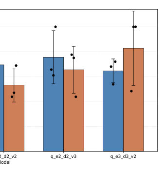
<figcaption class="paper-figure-caption"><b>Fig 1.</b> Fig. 1. Grammar-level validity of the classical baseline and quantum transformer vari- ants on the deterministic and lexicographic tasks. Bars show mean scores over three seeds, error bars show one standard deviation and black points indicate the individual seed outcomes.</figcaption>
</figure>
<figure class="paper-figure-card">
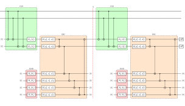
<figcaption class="paper-figure-caption"><b>Fig 2.</b> Fig. 2. Detailed circuit diagram of the two-encoder, two-decoder quantum transformer instance. Embedding circuits are shown in red, individual heads in blue, encoder inte- gration circuits in yellow, connector blocks in green and decoder blocks in orange.</figcaption>
</figure>
</div>

<p><strong>Summary.</strong> This paper introduces a variational quantum transformer designed for sequence modeling in QNLP, replacing classical layers with quantum circuits. The authors demonstrate that the architecture can learn complex grammar rules, though performance comparisons show that a classical transformer remains more accurate and stable. The work serves as a proof-of-concept for applying quantum circuits to structured data generation under near-term quantum constraints.</p>
<p><strong>Why it may be interesting.</strong> It provides a concrete, near-term quantum circuit implementation for a complex machine learning task (NLP), which is highly relevant for researchers exploring quantum machine learning algorithms on current hardware.</p>
<details>
<summary>Detailed structure</summary>
<p><strong>Main problem.</strong> The paper addresses the challenge of developing a compact, NISQ-compatible quantum architecture for performing synthetic Quantum Natural Language Processing (QNLP) sequence modeling.</p>
<p><strong>Main result.</strong> While the quantum models successfully learn nontrivial grammar regularities, the classical transformer baseline remained more accurate and stable, indicating the current work is a feasibility study rather than a claim of quantum advantage.</p>
<p><strong>Method.</strong> The authors propose a variational quantum transformer that replaces classical attention/feed-forward layers with variational quantum blocks, trained end-to-end using negative log-likelihood loss.</p>
<p><strong>Model / system.</strong> The system is a hybrid quantum-classical model featuring an autoregressive structure. It uses angle-encoding for tokens and consists of variational quantum encoder, connector, and decoder blocks.</p>
<p><strong>Key observables.</strong> Token accuracy and a comprehensive grammar score evaluating structural validity on deterministic and lexicographic grammars.</p>
<p><strong>Important parameters / regimes.</strong> The architecture depth (E, D, V) and the number of trainable parameters (e.g., 354–364 for quantum vs. 700 for classical).</p>
<p><strong>Assumptions / limitations.</strong> The contribution is explicitly framed as an architectural demonstration under NISQ constraints, acknowledging that the classical baseline is superior in performance and stability.</p>
<p><strong>Figures summary.</strong> Figure 1 shows the mean grammar score comparison across various quantum and classical models for both deterministic and lexicographic tasks over multiple seeds.</p>
<p><strong>Paper structure.</strong> The paper details the architectural design, including circuit components (encoding, encoder blocks, connector, decoder blocks), presents the experimental evaluation on controlled grammar tasks, and concludes by comparing performance against a classical baseline.</p>
</details>
<details>
<summary>Abstract</summary>
<p>We propose a compact NISQ-compatible quantum transformer architecture for synthetic QNLP sequence modelling. The model preserves the autoregressive next-token interface of a classical transformer, but replaces attention and feed-forward sublayers with variational quantum encoder blocks, connector circuits, decoder blocks and a direct two-qubit measurement readout. Token contexts are angle-encoded into small quantum registers, processed by parallel variational heads and encoder integration circuits and conditioned through decoder ancillae to produce a distribution over a four-token vocabulary. We evaluate several architecture variants on deterministic and lexicographic grammar-generation tasks against a compact classical transformer baseline. The quantum models are trainable end-to-end and learn nontrivial grammar structure, including perfect deterministic generation in individual runs and high lexicographic validity in the strongest variant. The classical baseline remains more accurate and stable and the quantum models are sensitive to initialization. The contribution is therefore not a claim of quantum advantage, but a concrete architecture and evaluation of transformer-inspired QNLP sequence modelling under near-term quantum constraints.</p>
</details>
<p><sub><a href="#top">↑ back to top</a></sub></p>
<h2 id="other-papers-18">Other papers (18)</h2>
<p><em>Papers from primary archives without highlighted authors or any topic match. Click to expand.</em></p>
<details>
<summary>Show other papers</summary>

<p><a id="paper-2609.17704"></a></p>
<h3 id="advances-in-the-quantum-state-texture-theory"><a href="http://arxiv.org/abs/2609.17704v1">Advances in the quantum-state texture theory</a></h3>
<p><strong>Authors:</strong> Jose Alfredo de Leon, Miguel Gonzalez, Alejandro Fonseca, Pedro C. Azado, Fernando Parisio<br>
<strong>Type:</strong> theory · <strong>Category:</strong> quantum information and computing · <strong>PDF:</strong> <a href="https://arxiv.org/pdf/2609.17704v1">https://arxiv.org/pdf/2609.17704v1</a><br>
<strong>Analysis basis:</strong> full PDF text, analyzed in chunks</p>
<div class="figure-strip-hint">↔ Scroll figures horizontally</div>
<div class="paper-figures-scroll">
<figure class="paper-figure-card">
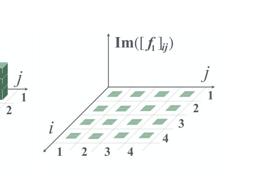
<figcaption class="paper-figure-caption"><b>Fig 1.</b> Figure 1. Pictorial 3D view of the real (left) and imaginary (right) parts of f1 matrix elements. This is the only quantum state for which both plots are flat.</figcaption>
</figure>
<figure class="paper-figure-card">
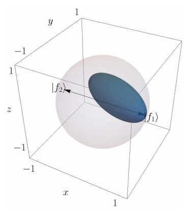
<figcaption class="paper-figure-caption"><b>Fig 2.</b> Figure 2. Geometric action of a single-qubit QST free operation; see Eq. (26). The boundary of the Bloch ball is shown as the outer sphere, while its image under the free operation is the inner ellipsoid. The states |f1⟩= |+⟩and |f2⟩= |−⟩correspond to the Bloch vectors (1, 0, 0)T and (−1, 0, 0)T , respectively. The parameters are η = 4/5, λ = (2/5)e7i/10, and q = (1/4)e7i/5.</figcaption>
</figure>
</div>
<p><strong>Summary.</strong> This work develops the resource theory of Quantum-State Texture (QST), a measure quantifying quantum information content. It advances the theory by focusing on the experimentally measurable 'grand sum' and introducing basis-independent concepts like 'set texture.' The results provide strong mathematical tools for analyzing quantum operations and composite quantum systems.</p>
<p><strong>Why it may be interesting.</strong> The rigorous mathematical framework for QST provides a new resource measure that can be applied to study quantum phase transitions or the robustness of quantum gates, linking abstract theory to measurable physical quantities.</p>
<details>
<summary>Detailed structure</summary>
<p><strong>Main problem.</strong> The paper advances the resource-theoretic formulation of Quantum-State Texture (QST) to provide a rigorous mathematical framework for quantifying quantum information content.</p>
<p><strong>Main result.</strong> It establishes the basis-independent concept of 'set texture' and provides concrete characterizations of QST free operations for single qubits and composite systems.</p>
<p><strong>Method.</strong> The authors utilize resource theory principles, focusing on the experimentally accessible 'grand sum' of density matrix elements and deriving bounds and operational interpretations for various texture monotones.</p>
<p><strong>Model / system.</strong> The theory applies to general quantum states ($\varrho$) in a Hilbert space of dimension $D$, analyzing how quantum operations (CPTP maps) affect the state's texture.</p>
<p><strong>Key observables.</strong> Quantum-State Texture (QST), the grand sum ($\Sigma(\varrho)$), distillable texture ($r$), and rugosity ($R(\varrho)$).</p>
<p><strong>Important parameters / regimes.</strong> The dimension $D$ of the Hilbert space, and the parameters characterizing the action of free operations on the Bloch vector for single qubits.</p>
<p><strong>Assumptions / limitations.</strong> The analysis centers on the grand sum $\Sigma(\varrho)$ as the key experimentally accessible observable, and assumes the existence of a fixed-point resource theory framework.</p>
<p><strong>Figures summary.</strong> Figure 1 illustrates the real and imaginary parts of matrix elements of the textureless state ($f_1$); Figure 2 shows the geometric mapping of a single-qubit QST free operation on the Bloch ball.</p>
<p><strong>Paper structure.</strong> The paper progresses by first defining QST using the grand sum, then characterizing free operations for single qubits (using Bloch sphere geometry), and finally extending the theory to composite systems by introducing basis-independent measures like set texture and analyzing generalized means for family rugosity.</p>
</details>
<details>
<summary>Abstract</summary>
<p>The recently introduced concept of quantum-state texture (QST) has found applications ranging from the identification of unknown quantum gates to the study of quantum phase transitions and criticality, and has already been experimentally investigated. Here, we advance its resource-theoretic formulation in several directions. Our approach centers on the experimentally accessible grand sum--the sum of all matrix elements of a density operator in a given basis. We clarify several points raised in the recent literature, including the relation between texture distillation and a simple grand-sum-based QST monotone. We completely characterize free operations for a single qubit and study the resulting state-conversion order; classify relevant families of free operations in arbitrary dimensions; derive bounds relating the texture of composite systems to that of their subsystems; and introduce the basis-independent concept of set texture. Together, these results strengthen and broaden the resource theory of QST, providing a foundation for its further development and applications.</p>
</details>
<p><sub><a href="#top">↑ back to top</a></sub></p>

<p><a id="paper-2609.18747"></a></p>
<h3 id="almost-one-bit-violation-of-minimum-output-renyi-entropy-additivity-simultaneously-at-all-orders"><a href="http://arxiv.org/abs/2609.18747v1">Almost One Bit Violation of Minimum-Output Rényi Entropy Additivity Simultaneously at All Orders</a></h3>
<p><strong>Authors:</strong> Guocheng Zhen, Chengkai Zhu, Ranyiliu Chen, Xin Wang<br>
<strong>Type:</strong> theory · <strong>Category:</strong> quantum information and computing · <strong>PDF:</strong> <a href="https://arxiv.org/pdf/2609.18747v1">https://arxiv.org/pdf/2609.18747v1</a><br>
<strong>Analysis basis:</strong> full PDF text, analyzed in chunks</p>
<div class="figure-strip-hint">↔ Scroll figures horizontally</div>
<div class="paper-figures-scroll">
<figure class="paper-figure-card">
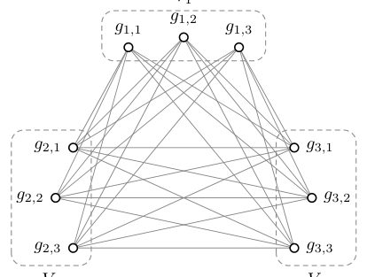
<figcaption class="paper-figure-caption"><b>Fig 1.</b> Figure 1: The complete tripartite graph Λ3,3 = K3,3,3, illustrating Λr,d = Kd,...,d. Each dashed part contains three generators and no internal edge; every pair of vertices in distinct parts is joined by an edge imposing commutation. Thus AΛ3,3 ∼= F3 3. Inverse generators are not drawn as separate vertices.</figcaption>
</figure>
</div>
<p><strong>Summary.</strong> This paper establishes a strong counterexample demonstrating that the minimum-output Rényi entropy is not additive for quantum channels. By constructing a specific quantum channel based on free group structures, the authors prove that the entropy fails to be additive by almost one bit simultaneously for all possible Rényi orders. This result significantly impacts the theoretical understanding of quantum information measures.</p>
<p><strong>Why it may be interesting.</strong> This work provides a fundamental theoretical counterexample to an additivity conjecture in quantum information theory, which has implications for understanding the fundamental limits of quantum channel capacity and entanglement measures.</p>
<details>
<summary>Detailed structure</summary>
<p><strong>Main problem.</strong> The paper investigates the additivity property of the minimum-output Rényi entropy for quantum channels, aiming to prove a simultaneous violation across all non-negative orders.</p>
<p><strong>Main result.</strong> It proves that the minimum-output Rényi entropy can fail to be additive by an amount approaching one full bit ($\log 2 - \epsilon$) simultaneously for all orders $p \in [0, \infty)$.</p>
<p><strong>Method.</strong> The proof constructs a counterexample using quantum channels derived from the direct product of free groups, leveraging tensorized Haagerup estimates and group theory constructions.</p>
<p><strong>Model / system.</strong> The model is a quantum channel $\Phi$ acting on a finite-dimensional system, whose structure is derived from the direct product of free groups, $G_{r,d} = igotimes_{j=1}^{r} F(j)^d$.</p>
<p><strong>Key observables.</strong> The primary observable is the entropy gap, $\Delta\Omega_p(\Phi) = 2H_{\min,p}(\Phi) - H_p(\Phi^{\otimes 2}|\Omega_m
angle\langle\Omega_m|)$, which is shown to remain large.</p>
<p><strong>Important parameters / regimes.</strong> The violation gap is $\log 2 - \epsilon$, and the required output dimension scales as $O(\epsilon^{-3})$ as $\epsilon 	o 0$.</p>
<p><strong>Assumptions / limitations.</strong> The construction relies on strong convergence results for representations of right-angled Artin groups and the use of specific group structures to enforce the non-additivity.</p>
<p><strong>Figures summary.</strong> Figure 1 illustrates the complete tripartite graph $K_{3,3,3}$, which defines the structure of the generators for the associated right-angled Artin group.</p>
<p><strong>Paper structure.</strong> The paper builds the counterexample by relating the entropy gap to one-copy purity and two-copy information, combining tools from operator algebras and free probability to establish the simultaneous violation across the entire Rényi spectrum.</p>
</details>
<details>
<summary>Abstract</summary>
<p>We prove that minimum-output Rényi-entropy additivity can fail by almost one bit simultaneously at every nonnegative order. For every $\varepsilon\in(0,\log2)$, there exists a finite-dimensional quantum channel with a real Stinespring isometry such that the same maximally entangled input witnesses a tensor-square entropy gap of at least $\log2-\varepsilon$ for all $p\in[0,\infty]$. The output dimension can be chosen to be $O(\varepsilon^{-3})$ as $\varepsilon\downarrow0$.   The construction uses direct products of free groups: tensorized Haagerup estimates control the one-copy outputs, while commutation between distinct factors forces exact Bell-branch collisions at two copies. Strong convergence gives both an existential realization through finite-dimensional representations of right-angled Artin groups followed by realification, and a Haar-orthogonal model whose success probability tends to one as the matrix dimension grows. We also determine the exact Bell quotient, prove asymptotically sharp regular-radius bounds, and show that the cubic output-dimension scale is optimal within the present purity--rank certificate.</p>
</details>
<p><sub><a href="#top">↑ back to top</a></sub></p>

<p><a id="paper-2609.18267"></a></p>
<h3 id="bath-dimension-and-initial-entropy-for-closed-repeated-use-of-a-quantum-channel"><a href="http://arxiv.org/abs/2609.18267v1">Bath dimension and initial entropy for closed repeated use of a quantum channel</a></h3>
<p><strong>Authors:</strong> Seth Douglas<br>
<strong>Type:</strong> theory · <strong>Category:</strong> quantum information and computing · <strong>PDF:</strong> <a href="https://arxiv.org/pdf/2609.18267v1">https://arxiv.org/pdf/2609.18267v1</a><br>
<strong>Analysis basis:</strong> full PDF text, analyzed in chunks</p>
<div class="figure-strip-hint">↔ Scroll figures horizontally</div>
<div class="paper-figures-scroll">
<figure class="paper-figure-card">
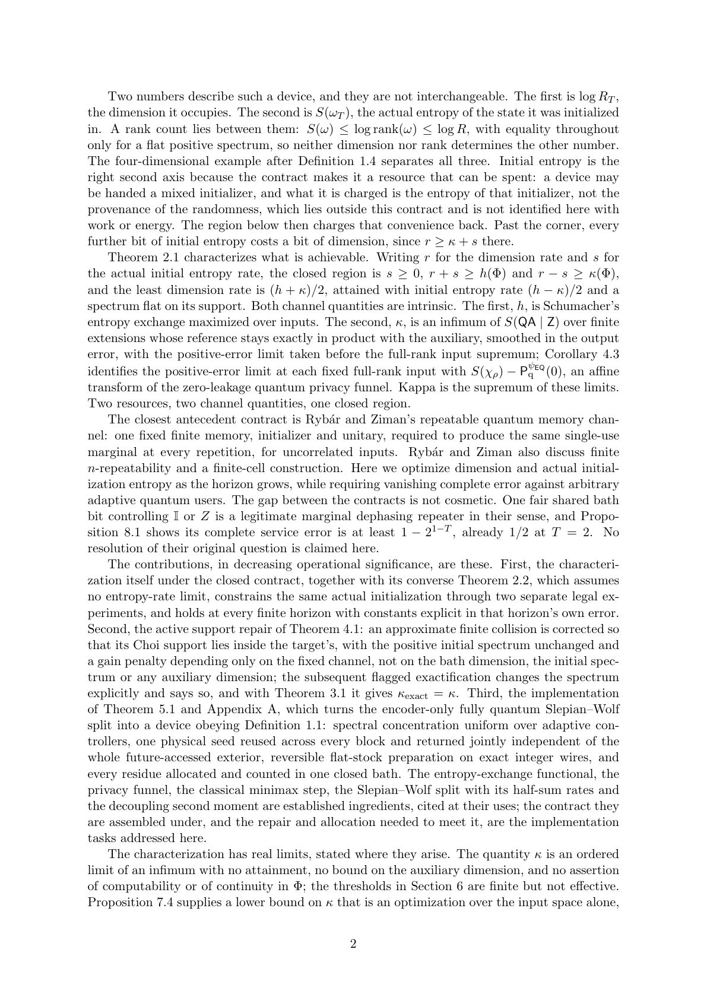
<figcaption class="paper-figure-caption"><b>Fig 1.</b> Low-resolution page preview, page 2</figcaption>
</figure>
<figure class="paper-figure-card">
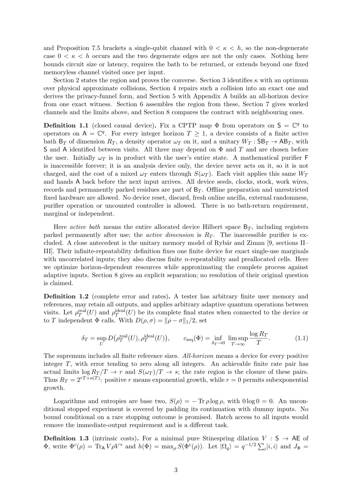
<figcaption class="paper-figure-caption"><b>Fig 2.</b> Low-resolution page preview, page 3</figcaption>
</figure>
<figure class="paper-figure-card">
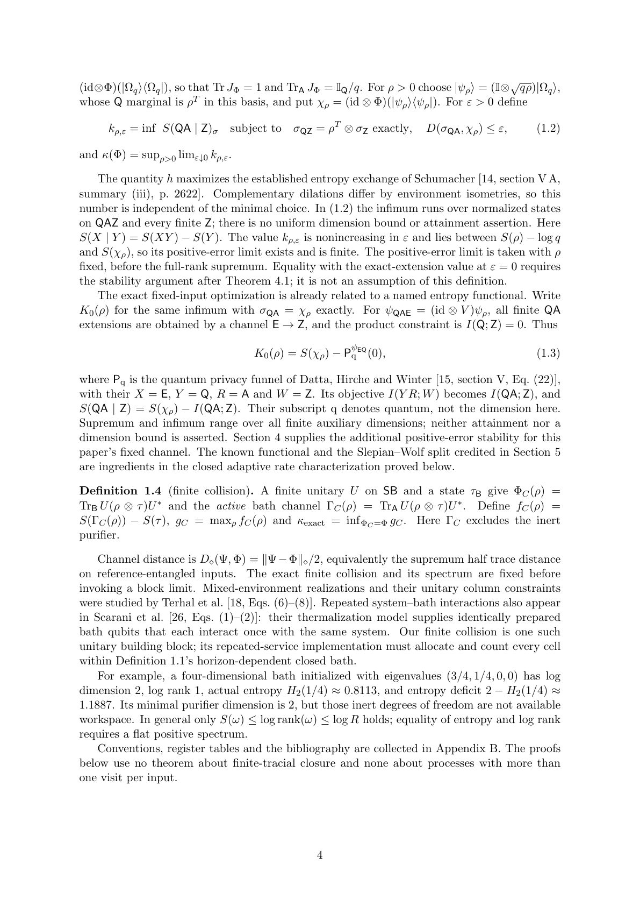
<figcaption class="paper-figure-caption"><b>Fig 3.</b> Low-resolution page preview, page 4</figcaption>
</figure>
<figure class="paper-figure-card">
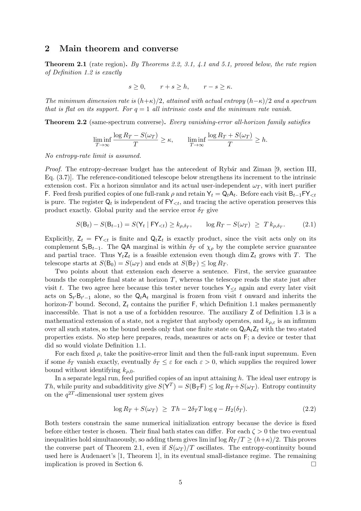
<figcaption class="paper-figure-caption"><b>Fig 4.</b> Low-resolution page preview, page 5</figcaption>
</figure>
<figure class="paper-figure-card">
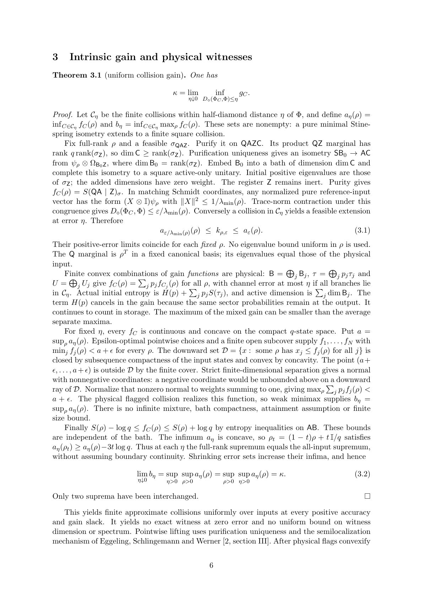
<figcaption class="paper-figure-caption"><b>Fig 5.</b> Low-resolution page preview, page 6</figcaption>
</figure>
</div>
<p><strong>Summary.</strong> This paper establishes the fundamental resource trade-offs governing the repeated use of a quantum channel in a closed system. It proves that the achievable rate region is constrained by the channel's maximum entropy exchange ($h$) and an intrinsic reference cost ($\kappa$). The methodology is highly technical, relying on advanced entropy inequalities and resource accounting for quantum information processing.</p>
<p><strong>Why it may be interesting.</strong> The work provides a rigorous, resource-theoretic quantification of the limitations on quantum computation when the environment (bath) and initial state are finite and must be recycled repeatedly, which is crucial for understanding practical quantum device longevity.</p>
<details>
<summary>Detailed structure</summary>
<p><strong>Main problem.</strong> The paper characterizes the fundamental resource constraints (bath dimension and initial entropy) required to repeatedly use a fixed, finite-dimensional quantum channel in a closed, resource-constrained device.</p>
<p><strong>Main result.</strong> The achievable rate region is precisely defined by three inequalities: $s \ge 0$, $r+s \ge h(\Phi)$, and $r-s \ge \kappa(\Phi)$, where $h$ is the maximum entropy exchange and $\kappa$ is an intrinsic extension cost.</p>
<p><strong>Method.</strong> The proof combines entropy converses, a specialized support repair technique, and an adaptive implementation of quantum Slepian–Wolf recycling to establish the necessary and sufficient conditions.</p>
<p><strong>Model / system.</strong> The model involves a closed quantum device performing repeated uses of a fixed CPTP map $\Phi$. The resource budget includes an active bath $B_T$ of dimension $R_T$, an initial state $\omega_T$, and a unitary $W_T$ applied at each step, with all resources strictly accounted for.</p>
<p><strong>Key observables.</strong> Bath dimension rate ($r$), initial entropy rate ($s$), maximum entropy exchange ($h$), and intrinsic reference cost ($\kappa$).</p>
<p><strong>Important parameters / regimes.</strong> The rates $r$ and $s$ are defined as limits over the horizon $T$. The minimum dimension rate is determined by $(h+\kappa)/2$.</p>
<p><strong>Assumptions / limitations.</strong> The analysis assumes a closed system where no external resets, fresh ancillas, or uncounted residues are available. The results are derived in the zero-error limit before the supremum over full-rank inputs.</p>
<p><strong>Paper structure.</strong> The paper defines the resource contract (Definition 1.1) and then derives the achievable rate region (Theorem 2.1) by combining entropy bounds and analyzing the resource cost structure. It establishes the converse bounds using entropy decrease budgets and links the intrinsic cost $\kappa$ to collision gains.</p>
</details>
<details>
<summary>Abstract</summary>
<p>We characterize the bath resources needed to supply repeated uses of a fixed finite-dimensional quantum channel in a closed device. For each horizon $T$, one bath, one initial state and one repeated unitary are fixed before the user. Each output is returned before the next input arrives; no reset, discard, fresh ancilla or uncounted controller is available. Approximation error must vanish against arbitrary adaptive users with quantum memory and references. Writing $r=\lim \log_2(R_T)/T$ for the bath dimension rate and $s=\lim S(ω_T)/T$ for the actual initial entropy rate, we prove that the achievable region is exactly $s\ge 0$, $r+s\ge h$ and $r-s\geκ$. Here $h$ is maximum entropy exchange and $κ$ is a smoothed independent-reference extension cost, with the zero-error limit taken before the supremum over full-rank inputs. Its exact fixed-input form is an affine transform of the zero-leakage quantum privacy funnel. The minimum dimension rate is $(h+κ)/2$. The proof combines entropy converses, a bath-dimension-independent support repair, and a closed adaptive implementation of encoder-only fully quantum Slepian--Wolf recycling. All seeds, clocks, workspace and retained residues are counted. Worked examples include dephasing, pure replacement and a qubit channel with $0<κ<h$. No computability of $κ$ or efficient circuit synthesis is claimed.</p>
</details>
<p><sub><a href="#top">↑ back to top</a></sub></p>

<p><a id="paper-2609.18570"></a></p>
<h3 id="catalytic-activation-of-genuine-multipartite-entanglement-and-nonlocality"><a href="http://arxiv.org/abs/2609.18570v1">Catalytic Activation of Genuine Multipartite Entanglement and Nonlocality</a></h3>
<p><strong>Authors:</strong> Eliot Donnadieu, Pavel Sekatski, Nicolas Brunner, Victor Barizien<br>
<strong>Type:</strong> theory · <strong>Category:</strong> quantum information and computing · <strong>PDF:</strong> <a href="https://arxiv.org/pdf/2609.18570v1">https://arxiv.org/pdf/2609.18570v1</a><br>
<strong>Analysis basis:</strong> full PDF text, analyzed in chunks</p>
<div class="figure-strip-hint">↔ Scroll figures horizontally</div>
<div class="paper-figures-scroll">
<figure class="paper-figure-card">
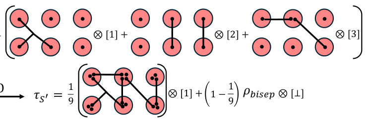
<figcaption class="paper-figure-caption"><b>Fig 1.</b> FIG. 1. Graphical representation of an initial 6-partite random network state ρS with equal weights, where solid lines represent pure entanglement, dark dots are quantum systems, and red circles are parties. This initial state is a flagged mixture of: (i) a GHZ-type state [31] shared between three parties; (ii) two pure bipartite entangled states shared between two groups of two parties; (iii) two pure bipartite entangled states shared between three parties. This state is transformed by CLO into a final state τS′ that is a flagged mixture of an entangled connected network state and a biseparable state. Accordingly to Result 1, the state τS′ is GME. For completeness, the catalyst state used...</figcaption>
</figure>
<figure class="paper-figure-card">
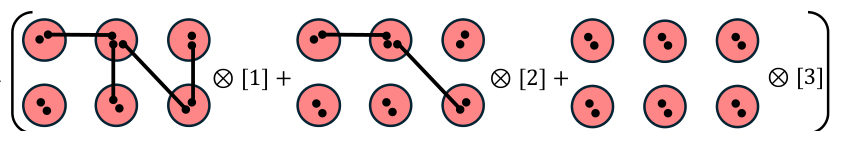
<figcaption class="paper-figure-caption"><b>Fig 2.</b> FIG. 2. Graphic representation of one of the catalysts that enables the transformation represented in Fig. 1. The latter is of the form ωC = 1</figcaption>
</figure>
<figure class="paper-figure-card">
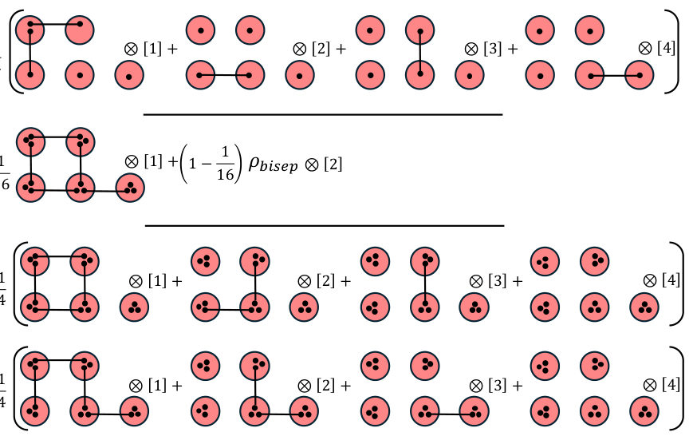
<figcaption class="paper-figure-caption"><b>Fig 3.</b> FIG. 3. Graphic representation of a biseparable state ρ that is catalytically transformable via Theorem 1 into the target state τS that is 5-partite GMNL. Following Corollary 1, ω1 and ω2 are two of the 16 possible canonical catalysts for such transformation. However, ω1 is partition separable over the 5 parties, and thus not GME nor GMNL, while ω2 is already 5-partite GMNL.</figcaption>
</figure>
</div>
<p><strong>Summary.</strong> This theoretical work demonstrates that genuine multipartite entanglement and nonlocality can be catalytically generated from less entangled states using local operations and a catalyst. By introducing the "sum-to-product" protocol, the authors provide a general mechanism to boost quantum correlations, which is significant for understanding resource generation in quantum information theory.</p>
<p><strong>Why it may be interesting.</strong> The concept of catalytic activation provides a powerful tool to generate highly entangled or non-local states from seemingly simple, resource-limited initial states, which has implications for quantum communication protocols.</p>
<details>
<summary>Detailed structure</summary>
<p><strong>Main problem.</strong> The paper investigates the possibility of activating genuine multipartite entanglement (GME) and genuine multipartite Bell nonlocality (GMNL) within the framework of quantum catalysis.</p>
<p><strong>Main result.</strong> They prove that any biseparable state that is not partition-separable can be deterministically transformed into a GME state using local operations and a catalyst. This activation extends to GMNL.</p>
<p><strong>Method.</strong> The core method involves constructing and applying a specialized catalytic protocol called "sum-to-product" within the framework of Correlated Local Operations (CLO).</p>
<p><strong>Model / system.</strong> The study analyzes N-partite quantum states ($
ho_S$) and utilizes an auxiliary catalyst state ($\omega_C$) to facilitate the transformation. The process is mathematically described using local operations and partial traces.</p>
<p><strong>Key observables.</strong> Genuine Multipartite Entanglement (GME) and Genuine Multipartite Bell nonlocality (GMNL).</p>
<p><strong>Important parameters / regimes.</strong> The number of parties (N), the structure of the initial biseparable state, and the catalyst state parameters.</p>
<p><strong>Assumptions / limitations.</strong> The analysis relies on the mathematical framework of CLO and the definition of separability relative to bipartitions.</p>
<p><strong>Figures summary.</strong> Figures illustrate the initial random network state and its transformation via CLO into a target state, demonstrating the resulting GME or GMNL properties.</p>
<p><strong>Paper structure.</strong> The paper builds from general catalytic activation theorems (Theorem 1) to a specific protocol ("sum-to-product"), and then extends this to demonstrate the activation of GMNL by combining it with multi-copy catalysis.</p>
</details>
<details>
<summary>Abstract</summary>
<p>We demonstrate the possibility to activate genuine multipartite entanglement (GME), the strongest form of entanglement for multipartite states, within the framework of quantum catalysis. Specifically, we show that any biseparable state (i.e. not GME) that is not partition separable can be deterministically transformed into a GME state via the help of a catalyst and local operations, without any classical communication. In turn, we construct a catalytic protocol tailored to the multipartite case. The protocol is termed "sum-to-product", as it transforms a mixture of states into their tensor product in a heralded manner. We apply this protocol to random network entangled states, which are biseparable by construction, and demonstrate catalytic activation of both GME and genuine multipartite Bell nonlocality.</p>
</details>
<p><sub><a href="#top">↑ back to top</a></sub></p>

<p><a id="paper-2609.17835"></a></p>
<h3 id="depth-analysis-of-the-quantum-approximate-optimization-algorithm-with-a-grover-mixer"><a href="http://arxiv.org/abs/2609.17835v1">Depth analysis of the Quantum Approximate Optimization Algorithm with a Grover mixer</a></h3>
<p><strong>Authors:</strong> Bojko N. Bakalov, Dimitar Grantcharov<br>
<strong>Type:</strong> theory · <strong>Category:</strong> quantum information and computing · <strong>PDF:</strong> <a href="https://arxiv.org/pdf/2609.17835v1">https://arxiv.org/pdf/2609.17835v1</a><br>
<strong>Analysis basis:</strong> full PDF text, analyzed in chunks</p>
<div class="figure-strip-hint">↔ Scroll figures horizontally</div>
<div class="paper-figures-scroll">
<figure class="paper-figure-card">

<figcaption class="paper-figure-caption"><b>Fig 1.</b> Figure 1. Schematic of the depth-p GM-QAOA circuit. Each layer consists of a cost evolution Z(γk) followed by the Grover-mixer evolution R(βk).</figcaption>
</figure>
<figure class="paper-figure-card">

<figcaption class="paper-figure-caption"><b>Fig 2.</b> Figure 2. Attainment of the Grover envelope. Circles show the largest value of |⟨e|ψp⟩|2 found at each depth p. The curve is the envelope sin2 min{(2p + 1)θ0, π/2}  of Theorem 5.2(1), drawn as a function of a continuous depth variable. Left: d = 2 with sin2 θ0 = 0.01. Right: the spectrum λ = (0, 1, 3, 5) with sin2 θ0 = 0.03 and the remaining three weights equal. In both panels, the circles agree with the envelope at every integer depth to the double-precision rounding error.</figcaption>
</figure>
<figure class="paper-figure-card">

<figcaption class="paper-figure-caption"><b>Fig 3.</b> Figure 3. The smallest infidelity 1 −|⟨e|ψp⟩|2 found at each depth p, on a logarithmic scale. Values at or below 10−15 are plotted on the dashed line at 10−15. Left: the consecutive spectra λ = (0, 1, . . . , d −1) with uniform weights and 3 ≤d ≤8. Each curve reaches the rounding floor at p∗= d −1, the smallest depth permitted by Theorem 5.5 for exact reachability. Right: the consecutive instances with d = 8, sin2 θ0 ∈{0.01, 0.003}, and d = 16, sin2 θ0 = 0.003, and the binomial instances with m ∈{8, 10}. The curves are labeled by the pair (d, sin2 θ0) for the consecutive instances and by m for the binomial instances.</figcaption>
</figure>
<figure class="paper-figure-card">

<figcaption class="paper-figure-caption"><b>Fig 4.</b> Figure 4. The measured p∗ against the integer lower bound  arcsin √1 −ε/(2θ0) −1</figcaption>
</figure>
</div>
<p><strong>Summary.</strong> This theoretical paper analyzes the performance limits of the Grover-mixer enhanced QAOA by deriving depth-independent lower bounds on the loss variance. It proves that achieving high fidelity requires a minimum circuit depth related to the initial state's probability weight. The results are significant for understanding the finite-depth scaling of quantum optimization algorithms.</p>
<p><strong>Why it may be interesting.</strong> This work provides rigorous, finite-depth lower bounds on the performance of QAOA variants, which is crucial for understanding the limitations of quantum optimization algorithms beyond asymptotic analysis.</p>
<details>
<summary>Detailed structure</summary>
<p><strong>Main problem.</strong> The paper analyzes the depth-dependence of the Quantum Approximate Optimization Algorithm (QAOA) when enhanced with a Grover mixer (GM-QAOA). It seeks to establish finite-depth lower bounds on the variance of the loss function and the depth required for state approximation.</p>
<p><strong>Main result.</strong> The authors derive a depth-independent lower bound for the variance of the loss ($ ext{Var}[\ell_p]$) and establish Grover-type reachability bounds showing that the required depth scales inversely with the square root of the initial probability.</p>
<p><strong>Method.</strong> The analysis uses spectral decomposition of the cost Hamiltonian and develops recursive relations for expected overlaps and variances by averaging over the independently sampled cost and mixing angles.</p>
<p><strong>Model / system.</strong> The model is the GM-QAOA circuit, which alternates between cost evolution ($e^{-i\gamma H}$) and Grover-mixer evolution ($e^{-ieta G}$). The analysis focuses on the dynamics within an invariant subspace defined by the initial state $|\xi
angle$.</p>
<p><strong>Key observables.</strong> Variance of the loss ($    ext{Var}[\ell_p]$), fidelity of state approximation, and the required circuit depth ($p$).</p>
<p><strong>Important parameters / regimes.</strong> Lattice spacing ($\eta$), number of qubits ($n$), number of distinct eigenvalues ($d$), and the depth ($p$).</p>
<p><strong>Assumptions / limitations.</strong> The analysis critically assumes a lattice condition on the cost eigenvalues ($\lambda_j - \lambda_k \in \eta\mathbb{Z}$) and that the cost and mixing angles are sampled uniformly and independently.</p>
<p><strong>Figures summary.</strong> Figures schematically illustrate the GM-QAOA circuit depth, show the attainment of the Grover envelope for specific spectra, and plot numerically found minimum infidelities ($p^*$) against theoretical lower bounds.</p>
<p><strong>Paper structure.</strong> The paper proceeds by first establishing the variance lower bound (Theorem 1.1) based on spectral properties, followed by deriving the reachability bound (Theorem 1.2). Later sections refine these bounds, analyzing the obstruction to exact state approximation based on the structure of the carried spectrum.</p>
</details>
<details>
<summary>Abstract</summary>
<p>We study the Quantum Approximate Optimization Algorithm with a Grover mixer and independently sampled cost and mixing angles. Under a lattice condition on the cost values carried by the initial state, we prove a depth-independent lower bound for the variance of the loss at every depth, together with the same bound for the derivative with respect to the final mixing angle. The estimate is instance-dependent and, for fixed locality, is inverse polynomial in the number of qubits for integer-valued local objective functions with uniformly bounded local terms, in particular for MaxCut. We also establish Grover-type reachability bounds showing that the depth required to approximate a prescribed carried eigenspace is bounded below by a constant multiple of the inverse square root of its initial probability.</p>
</details>
<p><sub><a href="#top">↑ back to top</a></sub></p>

<p><a id="paper-2609.18332"></a></p>
<h3 id="direct-observation-of-phonon-mode-with-an-antisymmetric-raman-tensor"><a href="http://arxiv.org/abs/2609.18332v1">Direct observation of phonon mode with an antisymmetric Raman tensor</a></h3>
<p><strong>Authors:</strong> Shangfei Wu, Shang Ren, Kai Du, Xianghan Xu, Sang-Wook Cheong, David Vanderbilt, Girsh Blumberg<br>
<strong>Type:</strong> experiment · <strong>Category:</strong> strongly correlated electrons · <strong>PDF:</strong> <a href="https://arxiv.org/pdf/2609.18332v1">https://arxiv.org/pdf/2609.18332v1</a><br>
<strong>Analysis basis:</strong> full PDF text, analyzed in chunks</p>
<div class="figure-strip-hint">↔ Scroll figures horizontally</div>
<div class="paper-figures-scroll">
<figure class="paper-figure-card">

<figcaption class="paper-figure-caption"><b>Fig 1.</b> FIG. 1. Phonon modes. Raman response of Cr2O3 at 308 K and 18 K for RR [A1 + A2] (panel</figcaption>
</figure>
<figure class="paper-figure-card">

<figcaption class="paper-figure-caption"><b>Fig 2.</b> Fig. 1b. These are the Raman-active bulk phonon modes expected from the group theoretical</figcaption>
</figure>
<figure class="paper-figure-card">

<figcaption class="paper-figure-caption"><b>Fig 3.</b> FIG. 2. Temperature dependence. Temperature dependence of the modes for the E1 B mode</figcaption>
</figure>
<figure class="paper-figure-card">

<figcaption class="paper-figure-caption"><b>Fig 4.</b> FIG. 3. DFT phonon calculations. The real and imaginary components, as well as atom-</figcaption>
</figure>
</div>
<p><strong>Summary.</strong> This work reports the direct observation of a novel phonon mode in Cr2O3 using polarization-resolved Raman spectroscopy. The mode possesses an antisymmetric Raman tensor and carries intrinsic phonon angular momentum. By combining experiment with first-principles calculations, the authors establish a new technique to study symmetry-protected chiral excitations in quantum magnets.</p>
<p><strong>Why it may be interesting.</strong> The methodology provides a novel spectroscopic handle (antisymmetric Raman tensor) to probe chiral excitations and intrinsic angular momentum in magnetic materials, which is highly relevant to understanding complex quantum magnetic ordering.</p>
<details>
<summary>Detailed structure</summary>
<p><strong>Main problem.</strong> The study aims to detect and characterize phonon modes that possess an intrinsic phonon angular momentum (PAM) and are associated with an antisymmetric Raman tensor, as these modes are typically overlooked in standard spectroscopic analyses.</p>
<p><strong>Main result.</strong> The authors successfully detected an A2 phonon mode at 266 cm-1 in the antiferromagnetic chiral phase of Cr2O3, confirming its existence via polarization-resolved Raman spectroscopy.</p>
<p><strong>Method.</strong> The research combines polarization-resolved Raman spectroscopy with first-principles phonon calculations that treat both lattice vibrations and magnetic spins as coupled 'slow' degrees of freedom.</p>
<p><strong>Model / system.</strong> The physical system is Cr2O3, particularly when it enters its antiferromagnetic (AFM) chiral phase. The analysis relies on group theory to track symmetry breaking from the high-temperature phase (D3d) to the low-temperature magnetic phase (D3).</p>
<p><strong>Key observables.</strong> Phonon frequency (266 cm-1), polarization dependence (Raman tensor symmetry), and the presence of non-zero atom-resolved Phonon Angular Momentum (PAM).</p>
<p><strong>Important parameters / regimes.</strong> Temperature (especially the Néel temperature, T_N), and the presence of local symmetry breaking due to Cr vacancies.</p>
<p><strong>Assumptions / limitations.</strong> The Raman activity of the otherwise symmetry-forbidden A2 mode is attributed to local symmetry breaking caused by Cr vacancies in the crystal structure.</p>
<p><strong>Figures summary.</strong> Figures show the polarization dependence of the 266 cm-1 mode, and the calculations visualize the temperature dependence and the non-zero atom-resolved PAM for the A2 mode.</p>
<p><strong>Paper structure.</strong> The paper establishes the theoretical necessity of detecting antisymmetric Raman tensor modes, presents the experimental detection in Cr2O3, and supports the findings with detailed first-principles calculations linking the mode's activity to structural defects.</p>
</details>
<details>
<summary>Abstract</summary>
<p>Phonon angular momentum, characterized by circular or elliptical motion of atoms, plays a decisive role in diverse phenomena, ranging from the phonon Hall effect, phonon magnetic moment, Einstein-de Haas effect, Weyl phonons, and driven chiral phonons. The phonon modes with an antisymmetric Raman tensor, which carry an intrinsic phonon angular momentum in a pseudovector symmetry channel, have been overlooked in the past in the chiral phonon community. Here, we report the detection of this type of phonon mode using polarization-resolved Raman spectroscopy. We observe a phonon at 266cm$^{-1}$ in the antiferromagnetic chiral phase of Cr$_2$O$_3$ in the $A_2$-pseudovector symmetry channel. This $A_2$ mode's frequency and the elliptical motion are captured by first-principles phonon calculations, which treat both lattice and spins on an equal footing as 'slow' degrees of freedom. This mode gets Raman activity due to the presence of Cr vacancies in Cr$_2$O$_3$ that locally break the twofold rotational symmetry perpendicular to the threefold axis. Our results provide a new way to detect the novel symmetry-forbidden $A_2$ phonon modes with an antisymmetric Raman tensor in a pseudovector symmetry channel.</p>
</details>
<p><sub><a href="#top">↑ back to top</a></sub></p>

<p><a id="paper-2609.18744"></a></p>
<h3 id="electronic-correlations-shape-the-low-energy-optical-response-of-the-kagome-antiferromagnets-mnmath809mathsn-and-mnmath810mathge"><a href="http://arxiv.org/abs/2609.18744v1">Electronic correlations shape the low-energy optical response of the kagome antiferromagnets Mn$_3$Sn and Mn$_3$Ge</a></h3>
<p><strong>Authors:</strong> R. Mathew Roy, Bo Tai, Maxim Wenzel, Achyut Tiwari, Mykhaylo Ozerov, Chandra Shekhar, Claudia Felser, Artem V. Pronin, Xiaolong Feng, Martin Dressel<br>
<strong>Type:</strong> both · <strong>Category:</strong> strongly correlated electrons · <strong>PDF:</strong> <a href="https://arxiv.org/pdf/2609.18744v1">https://arxiv.org/pdf/2609.18744v1</a><br>
<strong>Analysis basis:</strong> full PDF text, analyzed in chunks</p>
<div class="figure-strip-hint">↔ Scroll figures horizontally</div>
<div class="paper-figures-scroll">
<figure class="paper-figure-card">

<figcaption class="paper-figure-caption"><b>Fig 1.</b> FIG. 1. (a) Crystal structure of Mn3X (X = Sn, Ge), with the two measurement geometries indicated: E ∥ab (in-plane) and E ⊥ab (out-of-plane). (b) x-ray diffraction patterns of Mn3Ge measured on the (001) and (1¯10) oriented surfaces. (c) Temperature dependence of the real part of the optical conductivity σ1(ω) of Mn3Sn for E ∥ab (left panel) and E ⊥ab (right panel). (d) Same as (c) for Mn3Ge. The left inset of each panel in (c) and (d) shows the Drude–Lorentz decomposition of σ1(ω) at 10 K, with the measured spectrum, the total fit, and the individual Drude and Lorentz contributions. The right inset shows the real part of the dielectric function ε1(ω) at 300 K; its zero crossing defines the...</figcaption>
</figure>
<figure class="paper-figure-card">

<figcaption class="paper-figure-caption"><b>Fig 2.</b> FIG. 2. (a) The calculated optical conductivities (σxx) of Mn3Sn for nonmagnetic, ferromagnetic, and noncollinear or- der of the Mn moments. (b) The frequency dependence of the effective mass of Mn3Sn for the in-plane and out-of-plane di- rections. (c) Same as (b), but for Mn3Ge. (d) The frequency dependence of the scattering rate for Mn3Sn; the black line is a quadratic polynomial fit. (e) Same as (d), but for Mn3Ge.</figcaption>
</figure>
<figure class="paper-figure-card">

<figcaption class="paper-figure-caption"><b>Fig 3.</b> FIG. 3. (a) The interband optical conductivity of Mn3Sn for the in-plane (top) and out-of-plane (bottom) directions. The experimental conductivity (σ1) is plotted along with the calculated optical conductivity (σxx, σzz) for Hubbard Coulomb repulsion U = 0 and U = 4 eV. The arrows indicate the appearance of low-energy interband transition for U = 4 eV. (b) The electronic band structure of Mn3Sn for U = 0 (top) and U = 4 eV (bottom). The labeled arrows indicate the dominant interband transitions. (c) The band-resolved optical conductivity calculated for U = 0 (top) and U = 4 eV (bottom). The labels indicate the band-resolved conductivities whose contributions arise from the interband...</figcaption>
</figure>
<figure class="paper-figure-card">

<figcaption class="paper-figure-caption"><b>Fig 4.</b> FIG. 4. (a) The interband optical conductivity of Mn3Ge for the in-plane (top) and out-of-plane (bottom) directions. The experimental conductivity (σ1) is plotted along with the calculated optical conductivity (σxx, σzz) for Hubbard Coulomb repulsion U = 0 and U = 4 eV. The arrows indicate the anisotropic low-energy interband transitions present in the U = 0 case. (b) The electronic band structure of Mn3Ge for U = 0 (top) and U = 4 eV (bottom). The labeled arrows indicate the dominant interband transitions. (c) The band-resolved optical conductivity calculated for U = 0 (top) and U = 4 eV (bottom). The labels indicate the band-resolved conductivities whose contributions arise from the...</figcaption>
</figure>
</div>
<p><strong>Summary.</strong> This work uses optical spectroscopy and DFT+U calculations to demonstrate that electron-electron correlations fundamentally govern the low-energy optical response of the kagome antiferromagnets Mn3Sn and Mn3Ge. The strong correlation effects are necessary to explain the optical properties of Mn3Sn, establishing a correlated picture applicable to other correlated topological metals.</p>
<p><strong>Why it may be interesting.</strong> The explicit comparison between correlated (Mn3Sn) and weakly correlated (Mn3Ge) materials provides a clear case study for how strong electronic correlations dictate macroscopic properties like optical response in magnetic insulators.</p>
<details>
<summary>Detailed structure</summary>
<p><strong>Main problem.</strong> To investigate how electron-electron interactions (electronic correlations) shape the low-energy optical response of the kagome antiferromagnets Mn3Sn and Mn3Ge.</p>
<p><strong>Main result.</strong> Electron-electron interactions are crucial for describing the optical transitions in Mn3Sn, leading to a significantly different optical effective mass compared to its isostructural analog, Mn3Ge.</p>
<p><strong>Method.</strong> The study combines experimental optical spectroscopy (measuring reflectivity) with advanced computational techniques, specifically DFT+U, to model the electronic structure and optical response.</p>
<p><strong>Model / system.</strong> The physical system consists of the kagome antiferromagnets Mn3Sn and Mn3Ge, which are analyzed using DFT+U to account for strong on-site Coulomb repulsion (U) and Hund's coupling (J) within the Mn d-states.</p>
<p><strong>Key observables.</strong> Optical conductivity (sigma_1(omega)), dielectric function (epsilon_1(omega)), optical effective mass (m*/m_b), and plasma frequency (omega_p).</p>
<p><strong>Important parameters / regimes.</strong> Correlation parameters U = 4 eV and J = 0.25 eV are critical for Mn3Sn, while Mn3Ge can be modeled accurately without these corrections.</p>
<p><strong>Assumptions / limitations.</strong> The analysis relies on Kramers-Kronig relations to extract optical properties from reflectivity data, and the extended Drude analysis is used because intraband and interband contributions are not easily separated.</p>
<p><strong>Figures summary.</strong> Figures show temperature-dependent reflectivity measurements, magneto-optical responses showing no field dependence up to 17 T, and calculated band structures illustrating avoided crossings rather than Weyl nodes.</p>
<p><strong>Paper structure.</strong> The paper progresses by first establishing the necessity of correlation effects via comparison between Mn3Sn and Mn3Ge optical responses, then detailing the experimental measurement techniques (FTIR/ellipsometry), and finally applying advanced analysis (extended Drude model, DFT+U) to interpret the results.</p>
</details>
<details>
<summary>Abstract</summary>
<p>Using optical spectroscopy and density functional theory, we provide evidence that electron-electron interactions strongly affect the properties of the kagome antiferromagnet Mn$_3$Sn, since its low-energy optical interband transitions arise exclusively from the correlation-modified electronic band structure. Mn$_3$Sn possesses an optical effective mass about three times larger than that of its isostructural analog Mn$_3$Ge. The DFT+$U$ treatment in the Lichtenstein formulation, with an on-site Coulomb repulsion $U = 4$~eV and Hund's coupling $J = 0.25$~eV, accounts for the optical transitions in Mn$_3$Sn, whereas those in Mn$_3$Ge are already reproduced without Hubbard corrections ($U, J = 0$). The near-isotropic electronic structure of Mn$_3$Sn reveals a three-dimensional metal whose electronic response is shaped prominently by the Mn $d$-states. The apparent linear regime in $σ_1(ω)$ observed in Mn$_3$Sn and Mn$_3$Ge arises from several overlapping interband transitions and therefore should not be interpreted as the optical signature of the Weyl cones. The optical response does not alter with magnetic field up to 17 T, consistent with strong free-carrier screening. Our findings establish a comprehensive-correlated picture of Mn$_3$Sn and Mn$_3$Ge that offers a template for other correlated topological metals.</p>
</details>
<p><sub><a href="#top">↑ back to top</a></sub></p>

<p><a id="paper-2609.18922"></a></p>
<h3 id="exact-logical-error-rates-for-magic-state-cultivation"><a href="http://arxiv.org/abs/2609.18922v1">Exact logical error rates for magic state cultivation</a></h3>
<p><strong>Authors:</strong> Kwok Ho Wan, Ainhoa Zapirain<br>
<strong>Type:</strong> theory · <strong>Category:</strong> quantum information and computing · <strong>PDF:</strong> <a href="https://arxiv.org/pdf/2609.18922v1">https://arxiv.org/pdf/2609.18922v1</a><br>
<strong>Analysis basis:</strong> full PDF text, analyzed in chunks</p>
<div class="figure-strip-hint">↔ Scroll figures horizontally</div>
<div class="paper-figures-scroll">
<figure class="paper-figure-card">

<figcaption class="paper-figure-caption"><b>Fig 1.</b> Figure 1: d = 5 cultivation: logical error (left), acceptance (middle), and relative error of the truncated series (right). Shading and error bars show the published LER sampling-error intervals.</figcaption>
</figure>
<figure class="paper-figure-card">

<figcaption class="paper-figure-caption"><b>Fig 2.</b> Figure 3: Steps of the calculation. Pauli propagation gives the response of each double-checking stage to an incoming error, grouping keeps the tables small, and one tensor network joins the stages. The network is contracted in two arithmetics, giving exact fractions at fixed p and exact series coefficients.</figcaption>
</figure>
<figure class="paper-figure-card">

<figcaption class="paper-figure-caption"><b>Fig 3.</b> Figure 2: d = 3 cultivation: exact values compared with Clifft and Gidney–Shutty–Jones state-vector results. Interval conventions are given in Appendix G.</figcaption>
</figure>
<figure class="paper-figure-card">

<figcaption class="paper-figure-caption"><b>Fig 4.</b> Figure 3 summarises the steps. Section 2.2 car- ries the check observables backwards through a double-checking stage, which gives the response of that stage to each incoming Pauli error. Sec- tion 2.3 groups the errors that share a response, so that each stage becomes a small table. Sec- tion 2.4 writes the gates, noise and post-selection as tensors, contracts them with the incoming la- bels open to fill each table, and joins the stages</figcaption>
</figure>
<figure class="paper-figure-card">

<figcaption class="paper-figure-caption"><b>Fig 5.</b> Figure 5: The d = 3 double-checking circuit and the earlier stages. The dashed boundary marks this circuit’s input and the purple X7 specifies an ‘incoming error’ present.</figcaption>
</figure>
</div>
<p><strong>Summary.</strong> This paper provides an exact, analytical calculation of the logical error rates for cultivating magic states using $d=3$ and $d=5$ quantum error correction circuits. By using advanced techniques like Pauli propagation and CRT reconstruction, the authors derive precise power series expansions for the error rates, confirming previous results and establishing the true fault distances of the circuits.</p>
<p><strong>Why it may be interesting.</strong> This work provides rigorous, non-stochastic analytical results for error rates in fault-tolerant quantum computation, which is foundational knowledge for designing practical quantum hardware.</p>
<details>
<summary>Detailed structure</summary>
<p><strong>Main problem.</strong> The paper computes the exact acceptance and logical error rates (LER) for magic state cultivation circuits at distances $d=3$ and $d=5$. This is crucial for assessing the fault-tolerance of quantum computation.</p>
<p><strong>Main result.</strong> The authors provide explicit series expansions for the LER, analytically recovering numerical results from previous sampling-based studies. They also determine the actual fault distances for these circuits ($d_{	ext{fault}}=2$ for $d=3$ and $d_{	ext{fault}}=3$ for $d=5$).</p>
<p><strong>Method.</strong> The calculation employs Pauli propagation and binary tensor contraction to exactly compute probabilities, avoiding sampling errors. Results are presented as power series expansions in $x = p/(1-p)$ and derived using techniques involving the Chinese Remainder Theorem (CRT) for exact integer reconstruction.</p>
<p><strong>Model / system.</strong> The system models quantum error correction circuits used to cultivate logical magic states, specifically focusing on the double-checking stages for code distances $d=3$ and $d=5$. The process involves Clifford gates and non-Clifford T gates under depolarizing noise.</p>
<p><strong>Key observables.</strong> Logical Error Rate ($  ext{PL}(p)$), Acceptance Probability ($A(p)$), and the response pair ($F_A, F_B$) to incoming errors.</p>
<p><strong>Important parameters / regimes.</strong> Circuit-level noise strength ($p$), and the code distances ($d=3, d=5$).</p>
<p><strong>Assumptions / limitations.</strong> The calculation excludes the escape stage, and the noise model assumes uniform depolarizing noise after every operation with measurement and reset flips.</p>
<p><strong>Figures summary.</strong> Figures illustrate the circuit structures for $d=3$ and $d=5$ cultivation, showing error propagation. Tables provide the exact rational evaluations and the coefficients for the power series expansions of the LER.</p>
<p><strong>Paper structure.</strong> The paper details the methodology using Pauli propagation and tensor contraction, derives the LER as a ratio of probabilities, and presents the final results as exact series expansions, validating them against prior numerical work.</p>
</details>
<details>
<summary>Abstract</summary>
<p>We compute exactly the acceptance and logical error rates for the distance $d=3$ and $d=5$ magic state cultivation circuits from Clifft [arXiv:2604.27058] and SOFT [arXiv:2512.23037] using Pauli propagation and binary tensor contraction. Actual $T$ gates are studied, not the $S$-gate proxy used for sampling. The calculation includes every fault order at several circuit-level noise strengths ($p$). We provide a series expansion form to the logical error rates, through order $(p/(1-p))^{10}$. The analytical results recover the numerical values from Clifft and SOFT at both $d=3$ and $d=5$ to within their sampling uncertainty. Then, we show that the $d=3$ and $d=5$ circuits actually have fault distances of $d_{\text{fault}}=2$ and $d_{\text{fault}}=3$ respectively, explaining the similar distance degrading effects from the companion code of [Quantum 10, 2134 (2026)].</p>
</details>
<p><sub><a href="#top">↑ back to top</a></sub></p>

<p><a id="paper-2609.18559"></a></p>
<h3 id="extensibly-causally-separable-processes-admit-realizations-as-quantum-circuits-with-classical-control-of-causal-order"><a href="http://arxiv.org/abs/2609.18559v1">Extensibly Causally Separable Processes Admit Realizations as Quantum Circuits with Classical Control of Causal Order</a></h3>
<p><strong>Authors:</strong> Wenjie Wei, Shengshi Pang<br>
<strong>Type:</strong> theory · <strong>Category:</strong> quantum information and computing · <strong>PDF:</strong> <a href="https://arxiv.org/pdf/2609.18559v1">https://arxiv.org/pdf/2609.18559v1</a><br>
<strong>Analysis basis:</strong> full PDF text, analyzed in chunks</p>
<div class="figure-strip-hint">↔ Scroll figures horizontally</div>
<div class="paper-figures-scroll">
<figure class="paper-figure-card">

<figcaption class="paper-figure-caption"><b>Fig 1.</b> FIG. 1. Isometric encoding and conditioning on a maximally entangled projection.</figcaption>
</figure>
<figure class="paper-figure-card">

<figcaption class="paper-figure-caption"><b>Fig 2.</b> FIG. 2. QC-CC circuit diagram for reordering the P parties to the first positions. A, B, C label three ordinary laboratories, and s = P. The upper row shows the original complete order of operations (A, s, B, C), and the lower row shows the order in which the operations are applied in the new circuit, (s, A, B, C).</figcaption>
</figure>
</div>
<p><strong>Summary.</strong> This theoretical paper establishes a fundamental equivalence between two formalisms for quantum causality: Extensible Causal Separability (ECS) and Quantum Circuits with Classical Control of Causal Order (QC-CC). By proving that every ECS process can be realized as a QC-CC, the authors provide a complete operational understanding of this class of quantum processes. This result is crucial for understanding the limits of causal structure in quantum computation.</p>
<p><strong>Why it may be interesting.</strong> It provides a rigorous operational interpretation for abstract concepts of causality in quantum information, linking theoretical separability criteria (ECS) directly to realizable computational models (QC-CC).</p>
<details>
<summary>Detailed structure</summary>
<p><strong>Main problem.</strong> The paper addresses the long-standing open problem of determining whether every Extensibly Causally Separable (ECS) quantum process admits a realization as a Quantum Circuit with Classical Control of Causal Order (QC-CC).</p>
<p><strong>Main result.</strong> The authors prove the equivalence between ECS processes and QC-CC processes, establishing that QC-CC structures fully characterize the class of ECS processes.</p>
<p><strong>Method.</strong> The equivalence is established using a generalized teleportation construction and induction on the number of parties, relating abstract process-matrix definitions to concrete circuit structures.</p>
<p><strong>Model / system.</strong> The study concerns quantum processes described in the process-matrix framework, involving multiple local laboratories, global past, and global future systems. The core mathematical objects are the process matrices $W$ and their decomposition properties.</p>
<p><strong>Key observables.</strong> The process matrix $W$, and its decomposition into components compatible with specific causal orderings.</p>
<p><strong>Important parameters / regimes.</strong> The number of local laboratories ($N$), and the dimensionality of the input/output spaces ($P, F, A_k$).</p>
<p><strong>Assumptions / limitations.</strong> The analysis often considers deterministic processes, though extensions to probabilistic cases are also covered, relying on the existence of specific isometric encodings.</p>
<p><strong>Paper structure.</strong> The paper builds by defining the abstract ECS concept, then defining the operational QC-CC model, and finally proving the equivalence through explicit constructions and inductive steps, covering both deterministic and probabilistic generalizations.</p>
</details>
<details>
<summary>Abstract</summary>
<p>Indefinite causal order extends the conventional circuit paradigm by allowing local quantum operations to be connected without a predetermined global order. Within the process-matrix framework, it is characterized by causal nonseparability, whereas extensible causal separability (ECS) requires that, under arbitrary input-ancilla extensions, a process admit a recursive decomposition into components, each compatible with a particular operation acting first. Quantum circuits with classical control of causal order (QC-CC), in which previous outcomes dynamically determine which operation acts next, are known to generate ECS processes, but whether every ECS process admits such a realization has remained a longstanding open problem. We settle it through a generalized teleportation construction that realizes every multipartite ECS process as a QC-CC. We further establish consistency between ECS definitions for trivial and nontrivial global past and future systems. These results provide ECS with an exact operational interpretation and identify QC-CC as the complete circuit structure underlying this class of processes.</p>
</details>
<p><sub><a href="#top">↑ back to top</a></sub></p>

<p><a id="paper-2609.18225"></a></p>
<h3 id="growing-einstein-rosen-bridge-with-multi-partite-entanglement"><a href="http://arxiv.org/abs/2609.18225v1">Growing Einstein-Rosen Bridge with Multi-partite Entanglement</a></h3>
<p><strong>Authors:</strong> Takanori Anegawa, Akihiro Miyata, Shota Suzuki, Kotaro Tamaoka<br>
<strong>Type:</strong> theory · <strong>Category:</strong> statistical mechanics · <strong>PDF:</strong> <a href="https://arxiv.org/pdf/2609.18225v1">https://arxiv.org/pdf/2609.18225v1</a><br>
<strong>Analysis basis:</strong> full PDF text, analyzed in chunks</p>
<div class="figure-strip-hint">↔ Scroll figures horizontally</div>
<div class="paper-figures-scroll">
<figure class="paper-figure-card">

<figcaption class="paper-figure-caption"><b>Fig 1.</b> FIG. 1. All four dynamical phases for π &lt; L &lt; 2π. Orange curves are the multi-entropy network; blue dashed curves are the competing HRT surface for S(C) = S(AB). The HRT surfaces for S(A) and S(B) are the ordinary interval caps in every panel and are omitted. The top and bottom edges are identified, so that the spatial direction forms a circle. The two gray vertical dashed lines indicate the horizons, and the intervening band represents the ER bridge. (a),(b) The same two-junction network survives the HRT transition. (c) It is replaced by two interval caps computing S(A) and S(B). (d) The network on one side forms a loop. Since A and B are chosen to have exactly the same size, the reflected...</figcaption>
</figure>
<figure class="paper-figure-card">

<figcaption class="paper-figure-caption"><b>Fig 2.</b> FIG. 4. Time evolution of GM(3) 2 and I2(A : B)/2 for TFD state of a periodic fermion chain (N = 8, L = 5, β/N = 1/50), computed by exact diagonalization for three interac- tion strengths: free(J = 1, V1 = V2 = 0), integrable(J = V1 = 1, V2 = 0) and non-integrable(J = V1 = V2 = 1)</figcaption>
</figure>
<figure class="paper-figure-card">

<figcaption class="paper-figure-caption"><b>Fig 3.</b> FIG. 2. Leading high-temperature dynamics and phase struc- ture. (a) GM(3) continues to grow even after the mutual infor- mation has reached its nonzero plateau. We set L = 1.2π and measure all quantities in units such that πr+ 4GN ≡1. (b) The</figcaption>
</figure>
<figure class="paper-figure-card">

<figcaption class="paper-figure-caption"><b>Fig 4.</b> FIG. 3. Time evolution of GM(3) 2 and I2(A : B)/2 in the TFD state of 1D hopping model(J = 0.5, N = 1000, and β = N/50). The plots show the results for L/N = 0.2 and 0.8, respectively. Also, since I2(A : B)/2 becomes very large at L/N = 0.8, we have subtracted an appropriate constant for visual comparison only.</figcaption>
</figure>
<figure class="paper-figure-card">

<figcaption class="paper-figure-caption"><b>Fig 5.</b> FIG. 5. Time evolution of GM(3) 2 (solid) and I2(A:B)/2 (dashed) in the SYK model for N = 16 Majoranas per side and βJ = 1. (a) p = 4, m = 6, 10; (b) m = 10, p = 2, 4. SYK results are quenched averages over 64 dis- order realizations for each p; Haar benchmarks are quenched averages over 256 unrestricted complex random pure states with (dA, dB, dC) = (2m/2, 2m/2, 2N−m). Shading indicates one standard error. Haar lines nearly overlap the p = 4 plateaus; for m = 6, the small late-time GM(3) 2 and I2/2 also nearly coincide.</figcaption>
</figure>
</div>
<p><strong>Summary.</strong> This work explores the role of multi-partite entanglement in detecting the growth of an Einstein-Rosen bridge, refining the ER=EPR conjecture. By using genuine multi-entropy, the authors show that entanglement can continue to grow in black hole analogues even when standard entanglement entropies saturate. This suggests that multi-partite structure is necessary to fully characterize the quantum correlations underlying spacetime connectivity.</p>
<p><strong>Why it may be interesting.</strong> The focus on multi-partite entanglement provides a powerful diagnostic tool to probe non-local quantum correlations that are essential for understanding spacetime geometry (ER bridges) in quantum gravity contexts.</p>
<details>
<summary>Detailed structure</summary>
<p><strong>Main problem.</strong> The research investigates whether quantum entanglement can continue to grow in a system, specifically an Einstein-Rosen bridge, even after the standard entanglement entropies of its subsystems have saturated.</p>
<p><strong>Main result.</strong> Genuine multi-entropy can grow linearly with time in the holographic description of a two-sided BTZ black hole, extending the regime where entanglement detects ER bridge growth beyond what bipartite entanglement measures can capture.</p>
<p><strong>Method.</strong> The authors employ genuine multi-entropy ($ ext{GM}(3)$) and compare its time evolution against standard entanglement entropy calculations derived from the Ryu-Takayanagi (HRT) prescription in AdS/CFT.</p>
<p><strong>Model / system.</strong> The primary systems studied include the two-sided BTZ black hole (dual to a TFD state), the spatially partitioned Sachdev-Ye-Kitaev (SYK) model, and general spin-chain models.</p>
<p><strong>Key observables.</strong> Genuine multi-entropy ($   ext{GM}(3)$), entanglement entropy ($S$), and mutual information ($I$).</p>
<p><strong>Important parameters / regimes.</strong> Time ($t$), black hole parameters ($r_+, L$), and the number of subsystems (tripartition).</p>
<p><strong>Assumptions / limitations.</strong> The analysis relies on the high-temperature limit ($eta 	o 0$) for the holographic calculations and compares results across different Rényi indices ($n$).</p>
<p><strong>Figures summary.</strong> Figures illustrate the dynamical phases of multi-entropy growth in the holographic setup, comparing the multi-entropy network evolution against the HRT surface evolution, and showing time evolution comparisons between $    ext{GM}(3)$ and mutual information in various models.</p>
<p><strong>Paper structure.</strong> The paper progresses by first establishing the problem using multi-partite entanglement measures, applying these measures to holographic models (BTZ black hole) to refine the ER=EPR relation, and then validating these findings by comparing the dynamics across different quantum many-body systems like SYK and spin chains.</p>
</details>
<details>
<summary>Abstract</summary>
<p>Can quantum entanglement continue to grow even after the entanglement entropies of subsystems have saturated? We address this question using genuine multi-entropy, which probes multi-partite entanglement structure beyond bipartite entanglement. In a two-sided BTZ black hole, this quantity grows linearly with time after every subsystem entropy of a fixed tripartition has saturated, extending the interval in which entanglement detects Einstein-Rosen bridge growth. The result refines the ER=EPR relation by identifying multi-partite structure invisible to ordinary entanglement entropies. Some spin-chain models and the spatially partitioned Sachdev-Ye-Kitaev (SYK) model exhibit distinct transients, while the late-time plateau values in holography, the SYK model, and Haar-random states share a universal behaviour.</p>
</details>
<p><sub><a href="#top">↑ back to top</a></sub></p>

<p><a id="paper-2609.18911"></a></p>
<h3 id="hamiltonian-engineering-via-pulses-beyond-group-averaging"><a href="http://arxiv.org/abs/2609.18911v1">Hamiltonian engineering via pulses: beyond group averaging</a></h3>
<p><strong>Authors:</strong> Ivan Beschastnyi, Lucah Patel, David Tinoco<br>
<strong>Type:</strong> theory · <strong>Category:</strong> quantum information and computing · <strong>PDF:</strong> <a href="https://arxiv.org/pdf/2609.18911v1">https://arxiv.org/pdf/2609.18911v1</a><br>
<strong>Analysis basis:</strong> full PDF text, analyzed in chunks</p>
<div class="figure-strip-hint">↔ Scroll figures horizontally</div>
<div class="paper-figures-scroll">
<figure class="paper-figure-card">

<figcaption class="paper-figure-caption"><b>Fig 1.</b> Low-resolution page preview, page 2</figcaption>
</figure>
<figure class="paper-figure-card">

<figcaption class="paper-figure-caption"><b>Fig 2.</b> Low-resolution page preview, page 3</figcaption>
</figure>
<figure class="paper-figure-card">

<figcaption class="paper-figure-caption"><b>Fig 3.</b> Low-resolution page preview, page 4</figcaption>
</figure>
<figure class="paper-figure-card">

<figcaption class="paper-figure-caption"><b>Fig 4.</b> Low-resolution page preview, page 5</figcaption>
</figure>
<figure class="paper-figure-card">

<figcaption class="paper-figure-caption"><b>Fig 5.</b> Low-resolution page preview, page 6</figcaption>
</figure>
</div>
<p><strong>Summary.</strong> This paper establishes a geometric theory for Hamiltonian engineering in quantum systems controlled by external pulses. It characterizes the set of achievable Hamiltonians using the convex hull of the adjoint orbit, showing how this set extends beyond what simple group averaging predicts. The framework provides necessary and sufficient conditions for tasks like dynamical decoupling in complex quantum architectures.</p>
<p><strong>Why it may be interesting.</strong> This work provides rigorous mathematical tools to determine the limits of quantum control, which is fundamental for designing quantum gates and controlling open quantum systems.</p>
<details>
<summary>Detailed structure</summary>
<p><strong>Main problem.</strong> The paper develops a geometric framework to characterize the set of effective Hamiltonians achievable in finite-dimensional quantum systems using ideal control pulses, going beyond simple group averaging.</p>
<p><strong>Main result.</strong> The set of achievable Hamiltonians is characterized by the convex hull of the adjoint orbit of the drift Hamiltonian plus the pulse group element, $   ilde{H} =   ext{conv}(  ext{Ad}_G H_0 + g)$.</p>
<p><strong>Method.</strong> It employs geometric control theory, utilizing the isotypic decomposition of the adjoint representation and analyzing the geometry of the resulting orbitope.</p>
<p><strong>Model / system.</strong> The system involves finite-dimensional quantum evolution governed by a bilinear Schrödinger equation, $i \dot{U} = (H_0 + \sum u_j H_j)U$, where control pulses generate the pulse group $G$. Specific applications include qubit networks.</p>
<p><strong>Key observables.</strong> The effective Hamiltonian $    ilde{H}$, the fixed subspace $V_0$ under the action of $G$, and the structure of the orbitope $   ext{conv}(  ext{Ad}_G H_0)$.</p>
<p><strong>Important parameters / regimes.</strong> The structure of the control amplitudes $u_j$, the dimension $n$ of the system, and the parameters governing the couplings in qubit networks ($eta, \gamma, \delta$).</p>
<p><strong>Assumptions / limitations.</strong> The analysis assumes the use of 'ideal control pulses' and relies on extensions of control systems theory, such as Filippov's relaxation theorem.</p>
<p><strong>Figures summary.</strong> The notes do not provide a summary of figures, but they detail mathematical characterizations of the orbitope structure and necessary/sufficient conditions involving norms and sums of squared coefficients.</p>
<p><strong>Paper structure.</strong> The paper builds from defining the general geometric framework using the pulse group and adjoint action, establishing the decoupling condition (Theorem 1.3), and then applying this framework to specific models like qubit networks to derive quantitative conditions for realizability.</p>
</details>
<details>
<summary>Abstract</summary>
<p>We develop a geometric framework for Hamiltonian engineering in finite-dimensional quantum systems using ideal control pulses. Starting from a bilinear Schrödinger equation with unbounded control amplitudes, we construct the closed pulse group and use extensions of control systems and Filippov's relaxation theorem to obtain a family of effective Hamiltonians given by the convex hull of the drift's adjoint orbit plus the Lie algebra of the pulse group. The geometry of this orbitope describes possibilities beyond group averaging. Using the isotypic decomposition of the adjoint representation, we characterize its affine hull and show that the group average lies in its interior. This yields locally accessible families of effective Hamiltonians around the invariant part of the drift. We apply the framework to recover the necessary and sufficient condition for dynamical decoupling from arbitrary interactions with a finite-dimensional bath. For connected abelian pulse groups, we describe the relevant representation decomposition through restricted roots. Finally, for qubit networks with identical pairwise couplings, we give a qualitative characterization and quantitative estimation of effective Hamiltonians that can be generated using our framework.</p>
</details>
<p><sub><a href="#top">↑ back to top</a></sub></p>
<hr>
<p>
<a href="index.html">← Index</a>
 · <a href="papers_04.html">← Previous</a> · <a href="papers_06.html">Next →</a>
</p>
<hr>

</body>
</html>
